Middle America, the geographic realm between the United States and the continent of South America, consists of three main regions: the Caribbean, Mexico, and the Central American republics. The Caribbean region, the most culturally diverse of the three, consists of more than seven thousand islands that stretch from the Bahamas to Barbados. The four largest islands of the Caribbean make up the Greater Antilles, which include Cuba, Jamaica, Hispaniola, and Puerto Rico. Hispaniola is split between Haiti in the west and the Dominican Republic in the east. The smaller islands, extending all the way to South America, make up the Lesser Antilles. The island that is farthest south is Trinidad, just off the coast of Venezuela. The Bahamas, the closest islands to the US mainland, are located in the Atlantic Ocean but are associated with the Caribbean region. The Caribbean region is surrounded by bodies of salt water: the Caribbean Sea in the center, the Gulf of Mexico to the west, and the North Atlantic to the east.
Central America refers to the seven states south of Mexico: Belize, Guatemala, Honduras, El Salvador, Nicaragua, Costa Rica, and Panama. Panama borders the South American country of Colombia. During the colonial era, Panama was included in the part of South America controlled by the Spanish. The Pacific Ocean borders Central America to the west, and the Caribbean Sea borders these countries to the east. While most of the republics have both a Caribbean and a Pacific coastline, Belize has only a Caribbean coast, and El Salvador has only a Pacific coast.
Figure 5.1 Middle America: Caribbean, Mexico, and Central America
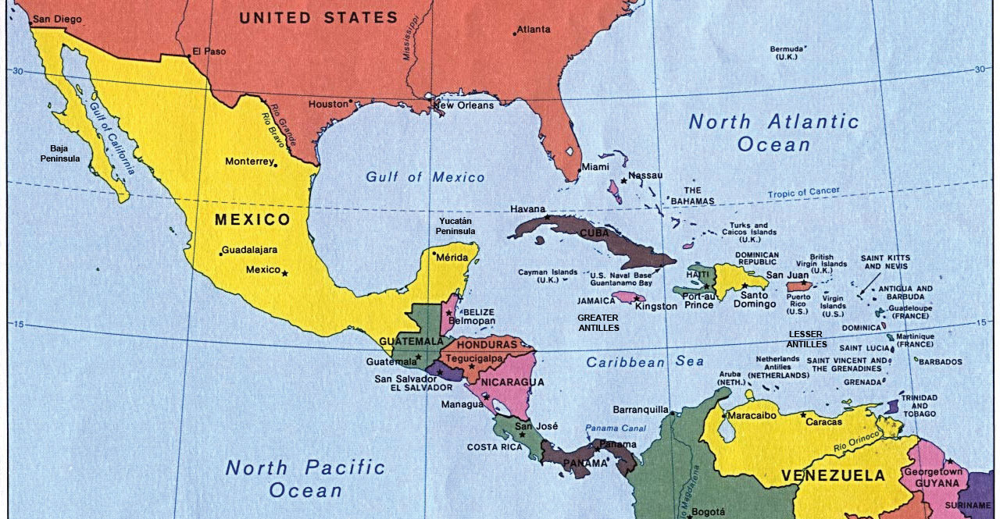Central America includes the countries south of Mexico through Panama.
Source: Map courtesy of University of Texas Libraries, http://www.lib.utexas.edu/maps/americas/middleamerica.jpg.
Mexico, the largest country in Middle America, is often studied separately from the Caribbean or Central America. Mexico has an extensive land border with the United States, its neighbor to the north. The Baja Peninsula, the first of Mexico’s two noted peninsulas, borders California and the Pacific Ocean and extends southward from California for 775 miles. The Baja region is mainly a sparsely populated desert area. The Yucatán Peninsula borders Guatemala and Belize and extends north into the Gulf of Mexico. The Yucatán was a part of the ancient Mayan civilization and is still home to many Maya people.
Middle America is not a unified realm but is characterized by a high level of political and cultural diversity. A diverse mix of people—with AmerindianEthnicity of people whose ancestors are native to the Americas. (people native to the Americas), African, European, and Asian ethnic backgrounds—make up the cultural framework. This realm is often associated with the term “Latin America” because of the dominance of colonialism from European countries like Spain, France, and Portugal speaking a Latin-based language. The truth is that Latin is not an active language, and Middle America has created its own cultural identity in spite of the impact of colonialism, and the realm can be defined by its people and their activities as much as by its physical environment.
Middle America has various types of physical landscapes, including volcanic islands and mountain ranges. Tectonic action at the edge of the Caribbean Plate has brought about volcanic activity, creating many of the islands of the region as volcanoes rose above the ocean surface. The island of Montserrat is one such example. The volcano on this island has continued to erupt in recent years, showering the island with dust and ash and making habitation difficult. Many of the other low-lying islands, such as the Bahamas, were formed by coral reefs rising above the ocean surface. Tectonic plate activity not only has created volcanic islands but also is a constant source of earthquakes that continue to be a problem for the Caribbean community.
The republics of Central America extend from Mexico to Colombia and form the final connection between North America and South America. The Isthmus of Panama, the narrowest point between the Caribbean Sea and the Pacific Ocean, serves as a land bridge between the continents. The backbone of Central America is mountainous, with many volcanoes located within its ranges. Much of the Caribbean and all of Central America are located south of the Tropic of Cancer and are dominated by tropical type A climates. The mountainous areas have varied climates, with cooler climates located at higher elevations. Mexico has extensive mountainous areas with two main ranges in the north and highlands in the south. There are no landlocked countries in this realm, and coastal areas have been exploited for fishing and tourism development.
Using a regional approach to the geography of a realm helps us compare and contrast a place’s features and characteristics. Location and the physical differences explain the division of Middle America into two geographic areas according to occupational activities and colonial dynamics: the rimlandThe Caribbean islands and the Caribbean coastal areas of Central America., which includes the Caribbean islands and the Caribbean coastal areas of Central America, and the mainlandThe interior portions of Mexico and Central America., which includes the interior of Mexico and Central America.
Colonialism thrived in the rimland because it consists mainly of islands and coastal areas that were accessible to European ships. Ships could easily sail into a cove or bay to make port and claim the island for their home country. After an island or coastal area was claimed, there was unimpeded transformation of the area through plantationAgricultural unit focusing on a single cash crop with seasonal high-labor needs and usually operated by individuals not directly working the land. The plantation was common in the rimland of Middle America and more common during the era of slavery. agriculture. On a plantation, local individuals were subjugated as servants or slaves. The land was planted with a single crop—usually sugarcane, tobacco, cotton, or fruit—grown for export profits. Most of these crops were not native to the Americas but were brought in during colonial times. European diseases killed vast numbers of local Amerindian laborers, so slaves were brought from Africa to do the work. Plantation agriculture in the rimland was successful because of the import of technology, slave labor, and raw materials, as well as the export of the harvest to Europe for profit.
Plantation agriculture changed the rimland. The local groups were diminished because of disease and colonial subjugation, and by the 1800s most of the population was of African descent. Native food crops for consumption gave way to cash crops for export. Marginal lands were plowed up and placed into the plantation system. The labor was usually seasonal: there was a high demand for labor at peak planting and harvest times. Plantations were generally owned by wealthy Europeans who may or may not have actually lived there.
The mainland, consisting of Mexico and the interior of Central America, diverged from the rimland in terms of both colonial dynamics and agricultural production. The interior lacked the easy access to the sea that the rimland enjoyed. As a result, the haciendaLarge land holding established by Spanish colonialists for social prestige and a comfortable lifestyle. In Mexico, haciendas allowed local Amerindian residents to live on the premises and work for the Spanish land owner. style of land use developed. This Spanish innovation was aimed at land acquisition for social prestige and a comfortable lifestyle. Export profits were not the driving force behind the operation, though they may have existed. The indigenous workers, who were poorly paid if at all, were allowed to live on the haciendas, working their own plots for subsistence. African slaves were not prominent in the mainland.
In the mainland, European colonialists would enter an area and stake claims to large portions of the land, often as much as thousands or even in the millions of acres. Haciendas would eventually become the main landholding structure in the mainland of Mexico and many other regions of Middle America. In the hacienda system, the Amerindian people lost ownership of the land to the European colonial masters. Land ownership or the control of land has been a common point of conflict throughout the Americas where land transferred from a local indigenous ownership to a colonial European ownership.
Figure 5.2 Mainland and Rimland Characteristics of Middle America Based on Colonial-Era Economic Activities

The rimland was more accessible to European ships, and the mainland was more isolated from European activity.
The plantation and hacienda eras are in the past. The abolition of slavery in the later 1800s and the cultural revolutions that occurred on the mainland challenged the plantation and hacienda systems and brought about land reform. Plantations were transformed into either multiple private plots or large corporate farms. The hacienda system was broken up, and most of the hacienda land was given back to the people, often in the form of an ejidosLand system in Mexico in which the community owns the land but individuals can gain profit from it by sharing resources. system, in which the community owns the land but individuals can profit from it by sharing its resources. The ejidos system has created its own set of problems, and many of the communally owned lands are being transferred to private owners.
The agricultural systems changed Middle America by altering both the systems of land use and the ethnicity of the population. The Caribbean Basin changed in ethnicity from being entirely Amerindian, to being dominated by European colonizers, to having an African majority population. The mainland experienced the mixing of European culture with the Amerindian culture to form various types of mestizoPeople of mixed ethnicity, including European and Amerindian ethnicity. groups with Hispanic, Latino, or Chicano identities.
Though the southern region of the Americas has commonly been referred to as “Latin America,” this is a misnomer because Latin has never been the lingua franca of any of the countries in the Americas. What, then, is the connection between the southern region of the Americas and Latin? To understand this connection, the reader needs to bring to mind the dominant languages as well as the origin of the colonizers of the region called “Latin America.” Keep in mind that the name of a given country does not always reflect its lingua franca. For example, people in Mexico do not speak a language called “Mexican”; they speak Spanish. Likewise, Brazilians do not speak “Brazilian”; they speak Portuguese.
European colonialism had an immense effect on the rest of the world. Among other things, colonialism diffused the European languages and the Christian religion. Latin Mass has been a tradition in the Roman Catholic Church. Consider the Latin-based Romance language group and how European colonialism altered language and religion in the Americas. The Romance languages of Spanish and Portuguese are now the most widely used languages in Middle and South America, respectively. This is precisely why the term Latin America is not technically an appropriate name for this region, even though the name is widely used. Middle America is a more accurate term for the region between the United States and South America, and South America is the appropriate name for the southern continent in spite of the connection to Latin-based languages.
European colonialism impacted Middle America in more ways than language and religion. Before Christopher Columbus arrived from Europe, the Americas did not have animals such as horses, donkeys, sheep, chickens, and domesticated cattle. This meant there were no large draft animals for plowing fields or carrying heavy burdens. The concept of the wheel, which was so prominent in Europe, was not found in use in the Americas. Food crops were also different: the potato was an American food crop, as were corn, squash, beans, chili peppers, and tobacco. Europeans brought other food crops—either from Europe itself or from its colonies—such as coffee, wheat, barley, rice, citrus fruits, and sugarcane. Besides food crops, building methods, agricultural practices, and even diseases were exchanged.
The Spanish invasion of Middle America following Columbus had devastating consequences for the indigenous populations. It has been estimated that fifteen to twenty million people lived in Middle America when the Europeans arrived, but after a century of European colonialism, only about 2.5 million remained. Few of the indigenous peoples—such as the Arawak and the Carib on the islands of the Caribbean and the Maya and Aztec on the mainland—had immunities to European diseases such as measles, mumps, smallpox, and influenza. Through warfare, disease, and enslavement, the local populations were decimated. Only a small number of people still claim Amerindian heritage in the Caribbean Basin, and some argue that these few are not indigenous to the Caribbean but are descendants of slaves brought from South America by European colonialists.
Columbus landed with his three ships on the island of Hispaniola in 1492. Hispaniola is now divided into the countries of Haiti and the Dominican Republic. With the advantage of metal armor, weapons, and other advanced technology, the Spanish invaders quickly dominated the local people. Since Europe was going through a period of competition, warfare, and technological advancements, the same mind-set carried forward to the New World. Indigenous people were most often made servants of the Europeans, and resistance resulted in conflict, war, and often death. The Spanish soldiers, explorers, or adventurers called conquistadors were looking for profits and quick gain and ardently sought gold, silver, and precious gems. This quest for gain pitted the European invaders against the local groups. The Roman Catholic religion was brought over from Europe and at times was zealously pushed on the local “heathens” with a “repent or perish” method of conversion.
Many of the Caribbean islands have declared independence, but some remain crown colonies of their European colonizers with varying degrees of autonomy. Mexico achieved independence from Spain by 1821, and most Central American republics also gained independence in the 1820s. In 1823, the United States implemented the Monroe Doctrine, designed to deter the former European colonial powers from engaging in continued political activity in the Americas. US intervention has continued in various places in spite of the reduction in European activity in the region. In 1898, the United States engaged Spain in the Spanish-American War, in which Spain lost its colonies of Cuba, Puerto Rico, and others to the United States. Puerto Rico continues to be under US jurisdiction and is not an independent country.
Though the region of Mexico has been inhabited for thousands of years, one of the earliest cultures to develop into a civilization with large cities was the Olmec, which was believed to be the precursor to the later Mayan Empire. The Olmec flourished in the south-central regions of Mexico from 1200 BCE to about 400 BCE. Anthropologists call this region of Mexico and northern Central America MesoamericaThe term that anthropologists use for the region of southern Mexico and northern Central America where the early Olmec, Mayan, and Aztec civilizations existed.. It is considered to be the region’s cultural hearthRegion or area where an early human civilization began. because it was home to early human civilizations. The Maya established a vast civilization after the Olmec, and Mayan stone structures remain as major tourist attractions. The classical era of the Mayan civilization lasted from 300 to 900 CE and was centered in the Yucatán Peninsula region of Mexico, Belize, and Central America. Guatemala was once a large part of this vast empire, and Mayan ruins are found as far south as Honduras. During the classical era, the Maya built some of the most magnificent cities and stone pyramids in the Western Hemisphere. The city-states of the empire functioned through a sophisticated religious hierarchy. The Mayan civilization made advancements in mathematics, astronomy, engineering, and architecture. They developed an accurate calendar based on the seasons and the solar system. The extent of their immense knowledge is still being discovered. The descendants of the Maya people still exist today, but their empire does not.
Figure 5.3 Mayan Site of Uxmal in the Yucatán Region of Mexico

The classical Mayan era lasted from 300 to 900 CE. Many magnificent cities were built with stone and remain today as major tourist attractions.
Source: Photo by R. Berglee.
The Toltec, who controlled central Mexico briefly, came to power after the classical Mayan era. They also took control of portions of the old Mayan Empire from the north. The Aztec federation replaced the Toltec and Maya as the dominant civilization in southern Mexico. The Aztec, who expanded outward from their base in central Mexico, built the largest and greatest city in the Americas of the time, Tenochtitlán, with an estimated population of one hundred thousand. Tenochtitlán was located at the present site of Mexico City, and it was from there that the Aztec expanded into the south and east to create an expansive empire. The Aztec federation was a regional power that subjugated other groups and extracted taxes and tributes from them. Though they borrowed ideas and innovations from earlier groups such as the Maya, they made great strides in agriculture and urban development. The Aztec rose to dominance in the fourteenth century and were still in power when the Europeans arrived.
After the voyages of Columbus, the Spanish conquistadors came to the New World in search of gold, riches, and profits, bringing their Roman Catholic religion with them. Zealous church members sought to convert the “heathens” to their religion. One such conquistador was Hernán Cortés, who, with his 508 soldiers, landed on the shores of the Yucatán in 1519. They made their way west toward the Aztec Empire. The wealth and power of the Aztecs attracted conquistadors such as Cortés, whose goal was to conquer. Even with metal armor, steel swords, sixteen horses, and a few cannons, Cortés and his men did not challenge the Aztecs directly. The Aztec leader Montezuma II originally thought Cortés and his men were legendary “White Gods” returning to recover the empire. Cortés defeated the Aztecs by uniting the people that the Aztecs had subjugated and joining with them to fight the Aztecs. The Spanish conquest of the Aztec federation was complete by 1521.
As mentioned, the Spanish invasion of Middle America had devastating consequences for the indigenous populations. It is estimated that there were between fifteen and twenty-five million Amerindians in Middle America before the Europeans arrived. After a century of European colonialism, there were only about 2.5 million left.“Module 01: Demographic Catastrophe—What Happened to the Native Population after 1492?,” http://www.dhr.history.vt.edu/modules/us/mod01_pop/context.html. Cortés defeated the Amerindian people by killing off the learned classes of the religious clergy, priestly orders, and those in authority. The local peasants and workers survived. The Spanish destroyed the knowledge base of the Maya and Aztec people. Their knowledge of astronomy, their advanced calendar, and their engineering technology were lost. Only through anthropology, archaeology, and the relearning of the culture can we fully understand the expanse of these early empires. The local Amerindian descendants of the Maya and the Aztec still live in the region, and there are dozens of other Amerindian groups in Mexico with their own languages, histories, and cultures.
As the Spanish established urban centers in the New World, they structured each town after the Spanish pattern, with a plaza in the center. Around the plaza on one side was the church (Roman Catholic, of course). On the other sides of the plaza were government offices and stores. Residential homes filled in around them. This pattern can still be seen in almost all the cities built by the Spanish in Middle and South America. The Catholic Church not only was located in the center of town but also was a supreme cultural force shaping and molding the Amerindian societies conquered by the Spanish.
In Spain, the cultural norm was to develop urban centers wherever administration or military support was needed. Spanish colonizers followed a similar pattern in laying out the new urban centers in their colonies. Extending out from the city center (where the town plaza, government buildings, and church were located) was a commercial district that was the backbone of this model. Expanding out on each side of the spine was a wealthy residential district for the upper social classes, complete with office complexes, shopping districts, and upper-scale markets.
Figure 5.4 Catholic Cathedral across from a Plaza in the Yucatán City of Valladolid (left); Model of a Spanish Colonial Urban Pattern (right)

The Spanish colonial urban pattern had a plaza in the center of the city with government buildings around the square and a Catholic church on one side.
Source: Photo by R. Berglee.
Surrounding the central business district (CBD) and the spine of most cities in Middle and South America are concentric zones of residential districts for the lower, working, and middle classes and the poor. The first zone, the zone of maturity, has well-established middle-class residential neighborhoods with city services. The second concentric zone, the zone of transition (in situ accretion), has poorer working-class districts mixed with areas with makeshift housing and without city services. The outer zone, the zone of periphery, is where the expansion of the city occurs, with makeshift housing and squatter settlements. This zone has little or no city services and functions on an informal economy. This outer zone often branches into the city, with slums known as favelasTerm used to describe a slum in parts of South America, particularly Brazil. or barriosTerm used to describe a slum in the northern parts of South America and Middle America. that provide the working poor access to the city without its benefits. Impoverished immigrants that arrive in the city from the rural areas often end up in the city’s outer periphery to eke out a living in some of the worst living conditions in the world.
Cities in this Spanish model grow by having the outer ring progress to the point where eventually solid construction takes hold and city services are extended to accommodate the residents. When this ring reaches maturity, a new ring of squatter settlements emerges to form a new outer ring of the city. The development dynamic is repeated, and the city continues to expand outward. The urban centers of Middle and South America are expanding at rapid rates. It is difficult to provide public services to the outer limits of many of the cities. The barrios or favelas become isolated communities, often complete with crime bosses and gang activities that replace municipal security.
Figure 5.5 Spanish-American City Structure According to the Ford-Griffin Model

Identify the following key places on a map:
Mexico is the eighth-largest country in the world and is about one-fifth the size of the United States. Bordered to the north by the United States, Mexico stretches south to Central America, where it is bordered by Guatemala and Belize. One of Mexico’s prominent geographical features is the world’s longest peninsula, the 775-mile-long Baja California Peninsula, which lies between the Pacific Ocean and the Gulf of California (also known as the Sea of Cortez). The Baja California Peninsula includes a series of mountain ranges called the Peninsular Ranges.
The Tropic of Cancer cuts across Mexico, dividing it into two different climatic zones: a temperate zone to the north and a tropical zone to the south. In the northern temperate zone, temperatures can be hot in the summer, often rising above 80 °F, but considerably cooler in the winter. By contrast, temperatures vary very little from season to season in the tropical zone, with average temperatures hovering very close to 80 °F year-round. Temperatures in the south tend to vary as a function of elevation.
Mexico is characterized by a great variety of climates, including areas with hot humid, temperate humid, and arid climates. There are mountainous regions, foothills, plateaus, deserts, and coastal plains, all with their own climatic conditions. For example, in the northern desert portions of the country, summer and winter temperatures are extreme. Temperatures in the Sonoran and Chihuahuan Deserts exceed 110 °F, while in the mountainous areas snow can be seen at higher elevations throughout the year.
Two major mountain ranges extend north and south along Mexico’s coastlines and are actually extensions of southwestern US ranges. The Sierra Madre Occidental and the Sierra Madre Oriental run roughly parallel to each other. The Sierra Madre Occidental, an extension of the Sierra Nevada range, runs about 3,107 miles along the west coast, with peaks higher than 9,843 feet. The Sierra Madre Oriental is an extension of the Rocky Mountains and runs 808 miles along the east coast. Between these two mountain ranges lies a group of broad plateaus, including the Mexican Plateau, or Mexican Altiplano (a wide valley between mountain ranges). The central portions, with their rolling hills and broad valleys, include fertile farms and productive ranch land. The Mexican Altiplano is divided into northern and southern sections, with the northern section dominated by Mexico’s most expansive desert, the Chihuahuan Desert.
Another prominent mountain range is the Cordillera Neovolcánica range, which as its name suggests, is a range of volcanoes that runs nearly 620 miles east to west across the central and southern portion of the country. Geologically speaking, this range represents the dividing line between North and Central America. The peaks of the Cordillera Neovolcánica can reach higher than 16,404 feet in height and are snow covered year-round.
Copper Canyon, in the northern Mexican state of Chihuahua, is about seven times larger than the Grand Canyon. Copper Canyon was formed by six rivers flowing through a series of twenty different canyons. Besides covering a larger area than the Grand Canyon, at its deepest point, Copper Canyon is 1,462 feet deeper than the Grand Canyon.
Though sandy beaches often come to mind when thinking about Mexico, the mountainous regions are home to pine-oak forests. More than a quarter of Mexico’s landmass is covered in forests; as a result, timber is an important natural resource. Mexico ranks fourth in the world for biodiversity; it has the world’s largest number of reptile species, ranks second for mammals, and ranks fourth for the number of amphibian and plant species. It is estimated that more than 10 percent of the world’s species live here. Forest depletion is a key environmental concern, but timber remains an important natural resource. The loss of natural habitat coincides with depletion of natural resources and an increase in population.
Mexico is home to a range of volcanoes, some of which are active. Popocatépetl and Ixtaccíhuatl (“Smoking Warrior” and “White Lady,” respectively, in the Náhuatl language—a primary language of the indigenous peoples in central Mexico) occasionally send out puffs of smoke clearly visible in Mexico City, reminding the city’s inhabitants that eruption is a possibility. Popocatépetl is one of the most active volcanoes in Mexico, erupting fifteen times since the arrival of the Spanish in 1519 CE. This volcano is close enough to populations to threaten millions of people.
Figure 5.6 Major Volcanoes of Mexico
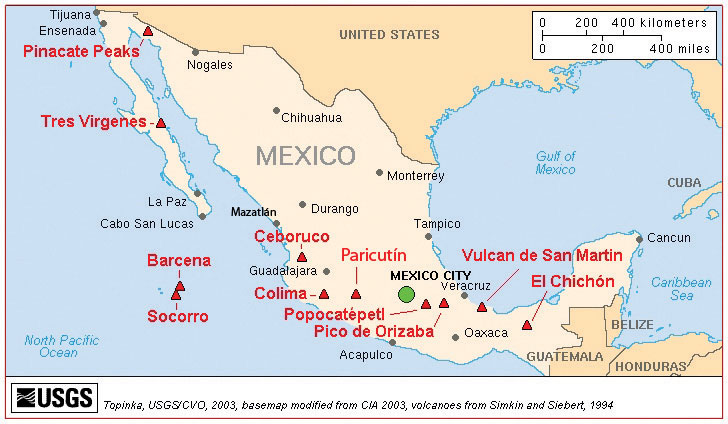Source: Map courtesy of USGS/Cascades Volcano Observatory, http://vulcan.wr.usgs.gov/Volcanoes/Mexico/Maps/map_mexico_volcanoes.html.
Three tectonic plates underlie Mexico, making it one of the most seismically active regions on earth. In 1985, an earthquake centered off Mexico’s Pacific coast killed more than ten thousand people in Mexico City and did significant damage to the city’s infrastructure.
Many of Mexico’s natural resources lie beneath the surface. Mexico is rich in natural resources and has robust mining industries that tap large deposits of silver, copper, gold, lead, and zinc. Mexico also has a sizable supply of salt, fluorite, iron, manganese, sulfur, phosphate, tungsten, molybdenum, and gypsum. Natural gas and petroleum also make the list of Mexico’s natural resources and are important export products to the United States. There has been some concern about declining petroleum resources; however, new reserves are being found offshore in the Gulf of Mexico.
Though only about 13 percent of Mexico’s land area is cultivated, favorable climatic conditions mean that food products are also an important natural resource both for export and for the feeding the country’s sizable population. Tomatoes, maize (corn), vanilla, avocado, beans, cotton, coffee, sugarcane, and fruit are harvested in sizable quantities. Of these, coffee, cotton, sugarcane, tomatoes, and fruit are primarily grown for export, with most products bound for the United States.
Mexico has very pronounced wet and dry seasons. Most of the country receives rain between June and mid-October, with July being the wettest month. Much less rain occurs during the other months: February is usually the driest month. More importantly, Mexico lies in the middle of the hurricane belt, and all regions of both coasts are at risk for these storms between June and November. Hurricanes along the Pacific coast are much less frequent and less violent than those along Mexico’s Gulf and Caribbean coasts. Hurricanes can cause extensive damage to infrastructure along the coasts where major tourist resorts are located. Mexico’s extensive and beautiful coastlines provide an important boon to the nation’s tourism industry.
In the past few decades, the Mexican economy has slowly become less centralized and more focused on the private sector. The Mexican economy is a mix of modern industry, agriculture, and tourism. Current estimates indicate that the service sector makes up about 60 percent of the economy, followed by the industrial sector at 33 percent. Agriculture represents just above 4 percent. Per-capita income in Mexico is about one-third of what it is in the United States. The Mexican labor force is estimated at forty-six million individuals; 14 percent of the labor force work in agriculture, 23 percent in the industrial sector, and 62 percent in the service sector.
Mexico is an example of a country with a clear core-periphery spatial relationship. Mexico City and its surrounding metropolitan centers represent the county’s core: the center of activity, industry, wealth, and power. Industries and manufacturing have been traditionally located in this region. The core region has most of the country’s 110 million people (as of 2010). Mexico’s population is about 77 percent urban, with the largest urban areas found in the core region.
Figure 5.7 Mexican Economic Core Area Centered on Urban Areas around Mexico City
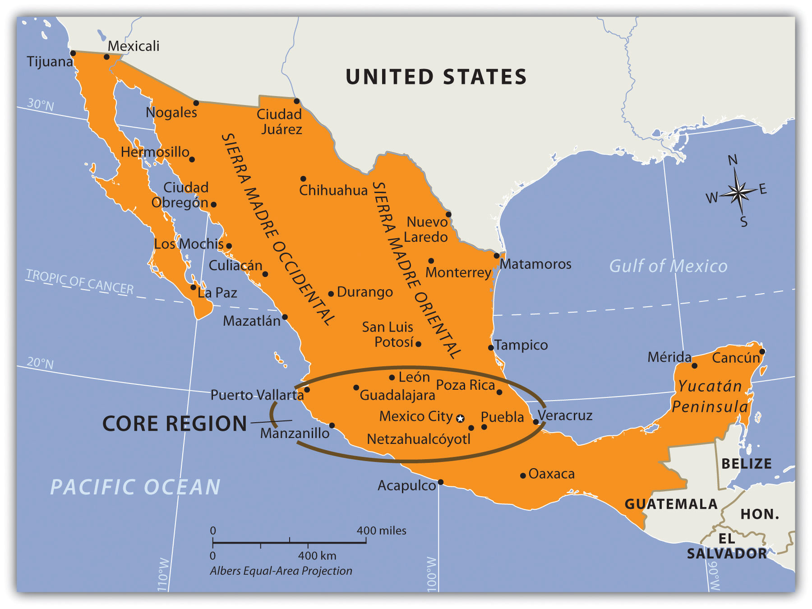The periphery is the northern region, including the border area, and the southern region, including the Yucatán Peninsula.
Mexico City is one of the largest cities in the world and anchors the core region of Mexico. In 2010, the official population of Mexico City was about eighteen million, but unofficial population estimates can reach thirty million. The actual population of Mexico City is unknown because of the hundreds of slums that surround the city on the slopes of the central valley. Mexico City is growing at a rate of more than one thousand people per day through a combination of the number of births and the number migrants. The lure of opportunities and advantages still pulls migrants to the city in search of a better life. Higher populations tax the resources in rural areas, where jobs and opportunities are hard to find. This push-pull relationship creates a strong rural-to-urban shift in Mexico. This same trend is found throughout the developing world.
Figure 5.8 Mexico City on a Clear Day with the Ridge of the Mountains Visible in the Background
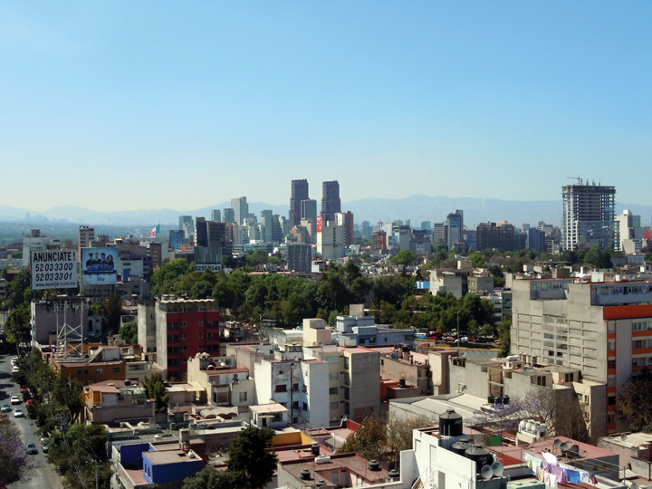A day with extensive air pollution will restrict the view of the horizon.
Source: Photo courtesy of Matthew Rutledge, http://www.flickr.com/photos/rutlo/5446309874/in/photostream.
Mexico City is a historic and vibrant city, but is not without problems. At higher than seven thousand feet in elevation, it is located between two mountain ranges. Air pollution is severe and is augmented by frequent air inversions that trap pollution over the city. To reduce air pollution, people are only allowed to drive their vehicles on certain days according to odd or even license plate numbers. Older vehicles that do not pass emission standards are banned. Fresh water is in short supply, and wastewater from sewage is discharged into lakes down the valley. Amerindians who live by these lakes or on the islands have to deal with the pollution. Because about four to five million inhabitants of Mexico City have no utilities, human waste buildup has become a challenge. Fresh water is pumped into the city through pipelines from across the mountains. Leakage and inadequate maintenance cause a large percentage of the water to be lost before it can be used in the city. Water is also drawn from underground aquifers beneath the city, which has caused parts of the city to sink as much as two feet, causing serious structural damage to historic buildings.
Figure 5.9 Mayan Home in the Rural Village of Yachachen in the Yucatán Peninsula
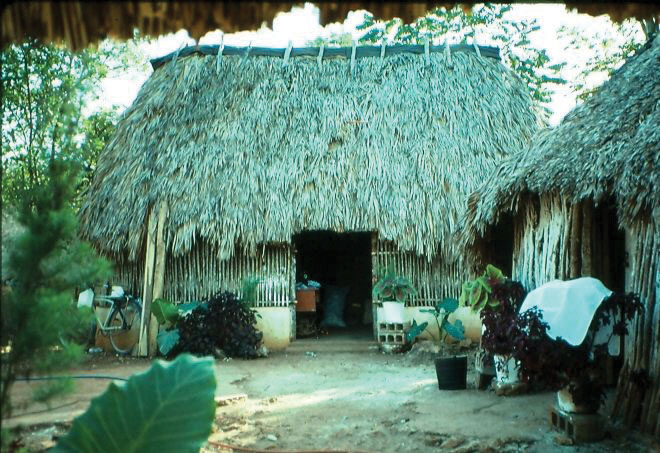This is located in a peripheral region of Mexico.
Source: Photo by R. Berglee.
One of Mexico’s largest peripheral regions lies to the south, along the country’s border with Guatemala. It includes the state of Chiapas and most of the Yucatán Peninsula and is primarily inhabited by Amerindians of Mayan ancestry. As is typical of peripheral regions, little political or economic power is held by the residents, who find themselves at the lowest end of the social and economic order. The highland region of Chiapas and the Yucatán Peninsula are primarily agricultural regions with few industries. However, tourism has changed the northern Yucatán: Cancún has developed into a major tourist destination, and Mayan ruins in the region attract thousands of tourists each season. Unless the local population can benefit from tourism, there are few other opportunities for employment in this part of Mexico.
The early European control of the land, the economy, and the political system created conflict for the people of Mexico. The country has experienced domination followed by revolution at various times, starting with colonial domination, then economic domination, and lastly political domination. In each historic cycle, revolution and conflict were followed by change. The result was a mixing and acculturation of the Europeans and the Amerindians, which created the current mestizo mainstream society. Mestizos make up about 60 percent of the current population, Europeans make up about 9 percent, and Amerindians make up about 30 percent. More than sixty indigenous languages spoken by Amerindian groups are recognized in Mexico. At least seventeen indigenous languages are spoken by more than one hundred thousand people or more in Mexico, most of them living in the southern part of the country.
Mexican society is regionally and ethnically diverse, with sharp socioeconomic divisions. Many rural communities have strong ties with their regions and are often referred to as patrias chicas (“small homelands”), which helps to perpetuate the cultural diversity. The large number of indigenous languages and customs, especially in the southern parts of Mexico, further emphasize cultural diversity. Idigenismo (“pride in the indigenous heritage”) has been a unifying theme of Mexico since the 1930s. However, daily life in Mexico can be dramatically different according to socioeconomic class, gender, ethnicity, rural or urban settlements, and other cultural differences. A peasant farmer in the rainforests of the Yucatán will lead a very different life than a museum curator in Mexico City or a lower-middle-class auto factory worker in Monterrey.
Figure 5.10 Socioeconomic Classes in Mexico and Most of Latin America
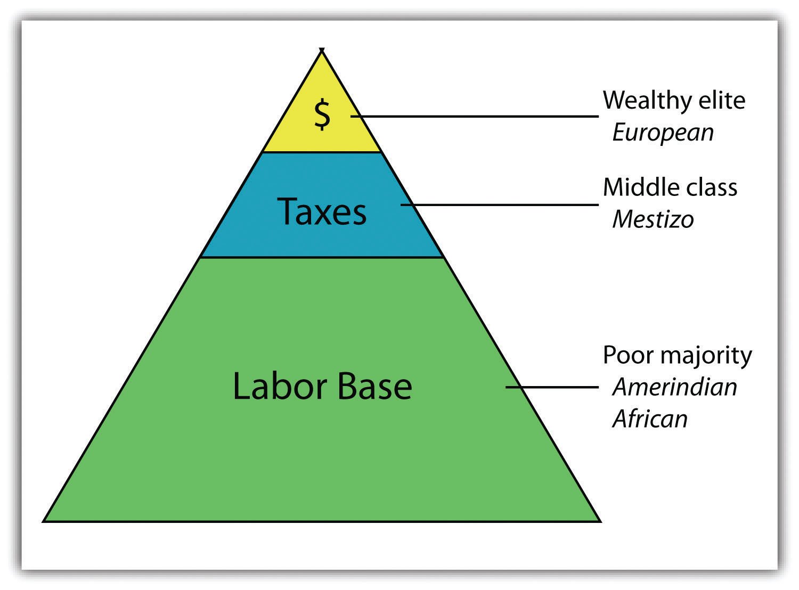The current social status of Mexican society can be illustrated by a pyramid shape (see Figure 5.10 "Socioeconomic Classes in Mexico and Most of Latin America"). Those of European descent are at the top of the pyramid and control a higher percentage of the wealth and power even though they are a minority of the population. The small middle class is largely mestizo, including managers, business people, and professionals. The working poor make up most of the population at the bottom of the pyramid. The lower class contains the highest percentage of people of Amerindian descent or, in the case of the Caribbean, African descent.
The most desirable type of social structure is illustrated by a diamond shape: in the middle is a large, employed middle class that can pay most of the taxes and purchase consumer goods that help bolster the economy. The narrow top is made up of the richest, and the narrow bottom is made up of the poorest (see Figure 5.11 "A More Ideal Socioeconomic Class Structure with a Large Middle-Class Tax Base"). Unfortunately, this optimal type of social structure does not always materialize in the manner hoped for. As an example, a goal of the economic planners of the United States has been to create a wide social profile. Unfortunately, in recent decades the US middle class has been declining, and the wealthy class and the working-class poor have increased. In Mexico, about 40 percent of the population lives in poverty.
Figure 5.11 A More Ideal Socioeconomic Class Structure with a Large Middle-Class Tax Base
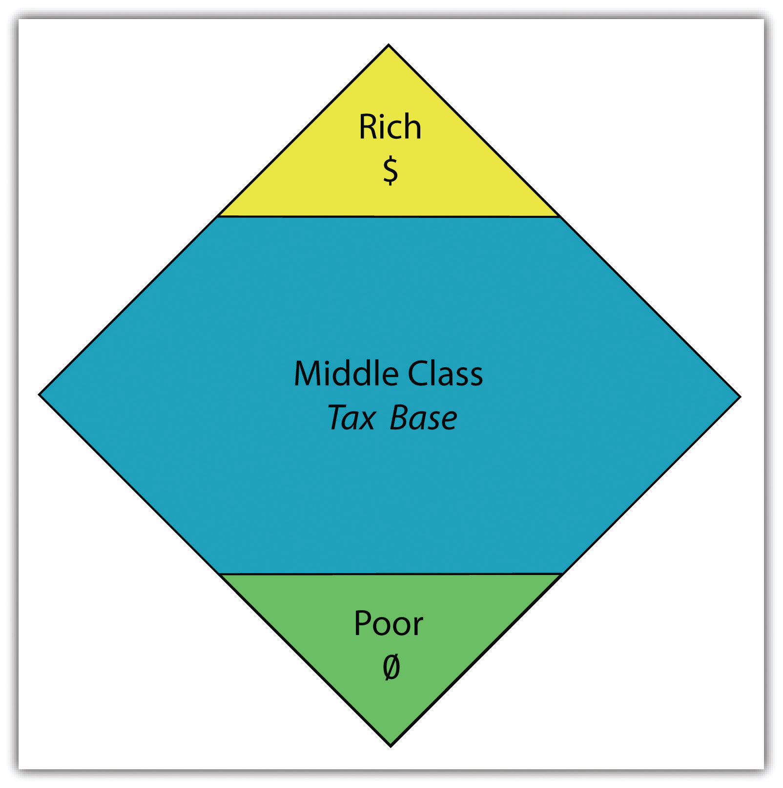Over the course of the past century, the people of Mexico have been working through a demographic transition. As the rural regions of Mexico continued to have a high fertility rate, death rates declined, and the country’s population grew exponentially. In 1970, the population of Mexico was about fifty million. By the year 2000, it had doubled to more than one hundred million. However, the population estimate for 2010 was just greater than 110 million. As Mexico urbanizes and industrializes, family size and fertility rates have been in decline, and population growth has slowed.
Figure 5.12 Population Pyramids for Mexico in 1980 and 2010
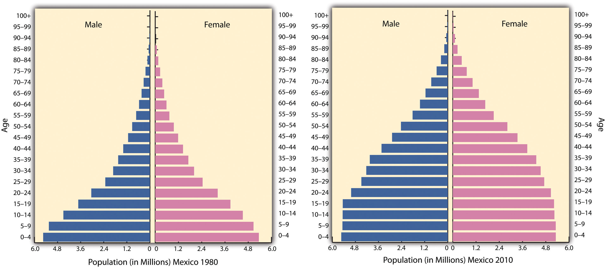Population pyramids for Mexico in 1980 and again in 2010. The 1980 pyramid indicates rapid population growth. The 2010 pyramid illustrates a slight decline in the past few years.
Source: Data courtesy of US Census Bureau International Programs.
Rural-to-urban shift has increased the population of Mexico City, which is considered the primate city of the country. Rural Amerindian groups in the isolated and remote mountainous regions of Mexico have historically been self-sufficient for their daily needs and have relied on the land for their livelihoods. In the past few decades, however, large family sizes have forced many young people to look to the cities for employment. On a global scale, people in many countries are migrating from the periphery to the core.
The North American Free Trade Agreement (NAFTA), is a 1994 economic agreement between Canada, the United States, and Mexico that eliminated or reduced the tariffs, taxes, and quotas between the countries to create the world’s largest trading bloc to compete with the European Union and the global economy. This theoretically allows more corporate investments across borders and increases foreign ownership of business facilities. It stimulated a shift in the location of industrial activity and in the migration patterns of people in Mexico. Capitalizing on the old industrial locations of northern Mexico, such as Monterrey, corporations started to relocate manufacturing plants from the United States to the Mexican side of the border to take advantage of Mexico’s low-cost labor. The aspect of cheaper labor was a benefit understood to bolster corporate profits and reduce product costs. The United States is one of the world’s largest consumer markets, so these manufacturing plants, called maquiladorasForeign-owned factories in Mexico that import most of the raw materials or components, assemble or process the product with local cheap labor, and export the finished product for profit. (also known as maquilas), could benefit both countries.
Maquiladoras are foreign-owned factories that import most of the raw materials or components needed for the products they manufacture, assemble, or process with local cheap labor, and then they export the finished product for profit. US corporations own more than half the maquiladoras in Mexico, and about 80 percent of the finished goods are exported back to the United States. Although most maquiladoras are located near the US-Mexican border, additional factories are located around Monterrey and other cities with easy access to the United States. A major trade corridor is developing between Monterrey and Dallas/Ft. Worth, which acts as a doorway to the US markets.
Figure 5.13 Import/Export System of a Maquiladora Operation
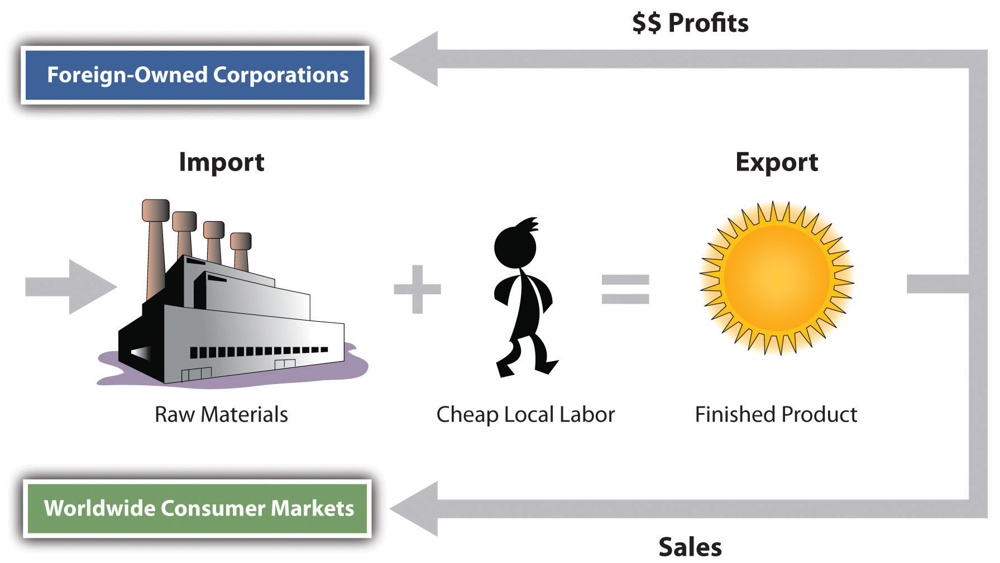Thousands of maquiladoras flourish along the US-Mexican border, although the Mexican government has also promoted maquiladoras in other parts of Mexico. Maquiladoras provide jobs for workers in Mexico and provide cheaper goods for US consumers. However, this system has inherent problems. Labor unions in the United States complain that the high-paying industrial jobs that support the US middle class are being lost to cheap Mexican labor. Labor laws in Mexico are less rigorous than US laws, allowing for longer work hours and fewer benefits for maquiladora employees. In addition, pollution standards in Mexico are not as restrictive as those in the United States, giving rise to environmental concerns. The central US-Mexican border region has dry or arid type B climates with fresh water in short supply, and water is in high demand in industrial processes. With the rapid increase in employment along the border, many of the people who work in the factories do not have adequate housing or utilities. Extensive slum areas have grown around maquiladora zones, which have little law enforcement, high crime, and few services.
The US-Mexican border region has become a strong pull factor, enticing poor people who seek greater opportunities and advantages to move from Mexico City and other southern regions of Mexico to the border region to look for work. When they do not find work, they are tempted to cross the US border illegally. The United States is considered a land of opportunity and attracts immigrants—both legal and illegal—from Mexico. For political and economic reasons, the main US political parties have been hesitant to seriously address the problem of the millions of illegal immigrants.
Figure 5.14 US-Mexican Border
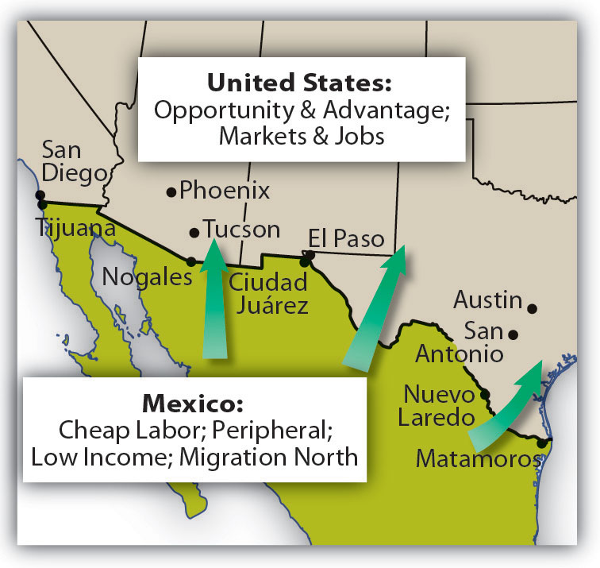Opportunities and advantages drive the push-pull of migrants searching for improved economic conditions.
It is not only US corporations that have taken advantage of the explosion in the number of maquiladoras in Mexico. European and Japanese companies have also muscled in on a share of the market. Capitalism thrives on cheap labor and accessible raw materials. With much of this industrial activity located in the northern sector of Mexico, it becomes easier to understand the difficult issues that confront Mexico’s southernmost state of Chiapas, where there is little benefit from this growth of economic activity.
In 1995, Chile was considered a possible addition to the countries participating in NAFTA. US congressional differences, however, have prevented Chile from being accepted as a full member. As a result, Chile remains a “silent partner” and conducts business according to similar rules. Agreements with Chile block Asian goods from making their way into the United States through Chile and Mexico. The United States, Mexico, and Canada all have full-fledged independent free-trade agreements with Chile.
The Free Trade Area of the Americas (FTAA) is a plan to integrate the entire Western Hemisphere into one giant trading bloc. The same concerns that the European Union faced regarding currency, language, and law confront this proposal. A new currency called the Eagle was proposed as early as the 1990s to replace the Canadian dollar, the US dollar, and the Mexican peso. In later years, a currency called the Amero was proposed for the same purpose, but its implementation is unlikely. Any change in the US dollar would affect a great number of countries: Puerto Rico (a territory of the United States) and the countries of Ecuador, Panama, and El Salvador already use the US dollar as their standard currency. A one-currency solution might become a more viable option if the US dollar were to crash or significantly lose its value in the world marketplace.
A goal of NAFTA is to exploit cheap labor until the Mexican economy rises to a level similar to that of the United States and Canada, equalizing migration patterns and eventually bringing about a situation in which the border checkpoints between the countries could be eliminated, as they have been within the European Union. Through the development of a larger middle class in Mexico, the three main countries of NAFTA would have similar standards of living. Mexico has a long way to go to arrive at this status but is making progress at the expense of the United States and Canada. Corruption, organized crime, and drug wars have made progress in Mexico more difficult.
Critics of NAFTA claim that the term free trade really means corporate trade. NAFTA is also viewed as a component of globalization in the form of corporate colonialism, which only benefits those wealthy enough to hold investments at the corporate level. The exploitation of cheap labor has caused undue immigration across the US-Mexican border, bringing millions of illegal workers into the United States. The Mexican government has not adequately addressed Mexico’s economic conditions to provide jobs and opportunities for the people or to use the wealth held or controlled by the elite minority to enhance economic opportunities for the middle- and lower-class majority.
Figure 5.15 Labor and Resources in Globalization
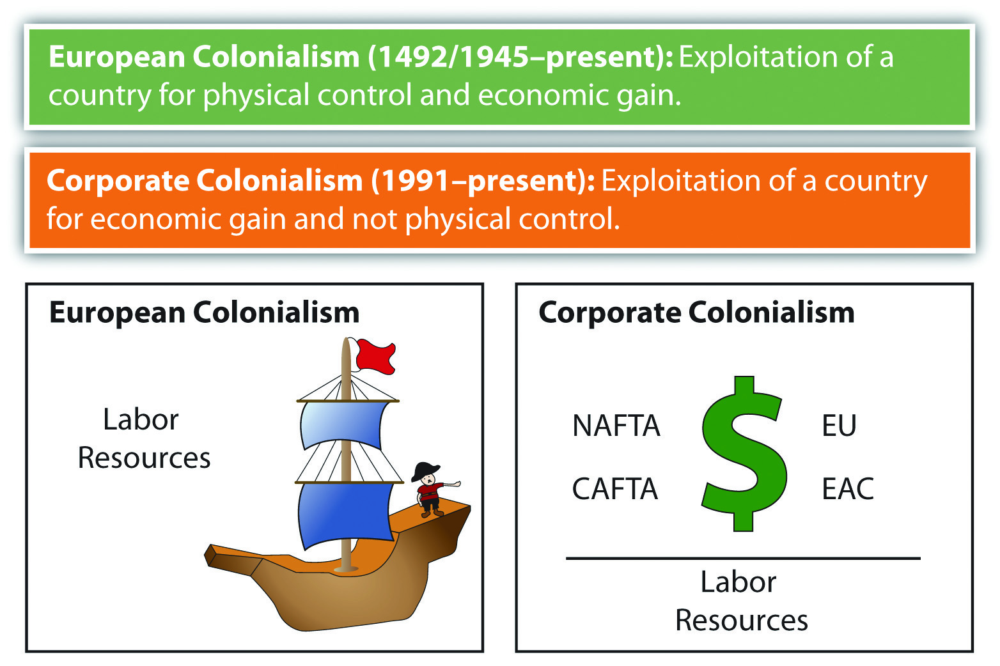Slave labor was prominent during European colonial era, whereas cheap labor is the target in neocolonial activity—that is, corporate colonialism.
The state of Chiapas in Mexico has an unequal distribution of wealth, a situation evident in most core-peripheral spatial relationships. Located in the rural highlands of Mexico and inhabited by a minority group that holds to the Mayan language and traditions, Chiapas has few economic opportunities for its people. Wealthy landowners and the ruling elite who have long held power have routinely taken advantage of peasant farmers. The aristocracy uses the best land and pays low wages to local workers. Medical care, education, and government assistance have been slow in coming to this region and its people.
In the past few decades, various Amerindian groups have organized in the rural areas of Mexico in an attempt to counter the power of the political elite. In Chiapas a group calling itself the Zapatista National Liberation Army (ZNLA) organized to coordinate an offensive against the Mexican government in various towns in the region. The ZNLA was organized to coincide with the implementation of NAFTA among the United States, Canada, and Mexico in January of 1994. As each country claimed benefits from this agreement, the peripheral region of Chiapas sought to receive their share of those benefits. The Mexican military was quick to react to the ZNLA offensive and rapidly drove them out of the towns they had occupied. The publicity and the international press coverage assisted the ZNLA in getting their message out to the rest of the world.
Since 1994, the ZNLA’s guerilla forces have used their familiarity with the mountains for sanctuary and have faced off against the Mexican military when negotiations with the federal government have broken down. The ZNLA want greater recognition of their rights and their heritage and more autonomy over their region and lands. This devolutionary process resembles that of various European regions desiring similar recognition of rights.
Similar conflicts are ongoing in other rural states of Mexico with majority Amerindian populations. There is a direct relationship between social status and wealth and skin color in most regions of Mexico. The skin tone is directly related to a person’s social status. On the one hand, Aztec and Mayan heritage is celebrated; on the other hand, their identity and darker skin relegates them to a lower socioeconomic status.
The illegal drug trade is a multibillion-dollar industry, and Mexico has traditionally been the transitional area or stop-off point between the South American drug producing areas and entrance into US markets. Cocaine, marijuana, and more recently heroin were produced in the Andes Mountains of South America and shipped north to the United States. Colombian cartels were once the main controllers of illegal drugs in the Western Hemisphere, but in recent decades, organized crime units in Mexico have muscled in on the control of drugs coming through Mexico, making deals with their South American counterparts to become the main traffickers of drugs into the United States, and the influence and power of Mexican drug cartels has increased immensely since the demise of the Colombian cartels in the 1990s. Enormous profits fuel the competition for control. Just as the United States has declared a war on drugs and has used its Drug Enforcement Administration (DEA) as a main arm in combating the industry, Mexico has had to address its own issues in the illegal drug trade.
Illegal drug income flowing into Mexico has become a major part of the economy in specific areas. Drug kingpins have used their economic power to buy off local police forces and silence opposition. They have also been known to provide poor neighborhoods with funding for services that would normally be designated as government obligations. These actions have often provided a mixed reaction within the population in local areas. The drug cartels have become an integrated part of the fabric of Mexico.
In an attempt to combat the situation, the Mexican government has been engaged in its own internal war against the illegal drug trade. The battles between the drug cartels and the Mexican government have created a serious internal conflict in the country, killing thousands of innocent bystanders in the cross fire. Armed conflicts between rival cartels or local gangs have increased the violence that has been intensifying since 2000. Mexican cities near the US border have experienced increased incidences of major drug-related murders and gang violence. Higher volumes of firearms trafficking from the United States and abroad into Mexico have been fueling the armed conflicts. Military and police casualties have increased, and the number of drug-related shootings are on the rise.
Figure 5.16 Influence of Major Drug Cartels in Mexico
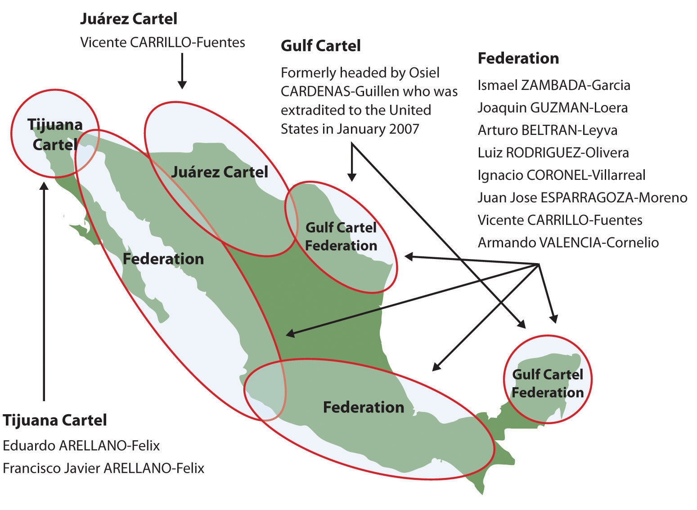Source: Map courtesy of US Congress, Committee on Foreign Relations, http://frwebgate.access.gpo.gov/cgi-bin/getdoc.cgi?dbname=110_cong_senate_committee_prints&docid=f:39644.pdf.
Cartels have been known to use jet airliners, semitrucks, and even submarines in their attempts to ship illegal drugs into the United States. Large tunnels have been found beneath the US-Mexican border that were used to smuggle drugs. Intimidation and corruption have been standard practices used by drug traffickers to protect their interests. Bribes, payoffs, and corruption have been difficult to battle in a country with a high percentage of the population living in poor conditions.
Identify the following key places on a map:
Central America is a land bridge connecting the North and South American continents, with the Pacific Ocean to its west and the Caribbean Sea to its east. A central mountain chain dominates the interior from Mexico to Panama. The coastal plains of Central America have tropical and humid type A climates. In the highland interior, the climate changes with elevation. As one travels up the mountainsides, the temperature cools. Only Belize is located away from this interior mountain chain. Its rich soils and cooler climate have attracted more people to live in the mountainous regions than along the coast.
Hurricanes, tropical storms, earthquakes, and volcanic activity produce recurring environmental problems for Central America. In 1998, Hurricane Mitch swept through the region, devastating Nicaragua and El Salvador, which had already been devastated by civil wars in previous years.
The volcanic activity along the central mountain chain over time has provided rich volcanic soils in the mountain region, which has attracted people to work the land for agriculture. Central America has traditionally been a rural peripheral economic area in which most of the people have worked the land. Family size has been larger than average, and rural-to-urban shift dominates the migration patterns as the region urbanizes and industrializes. Natural disasters, poverty, large families, and a lack of economic opportunities have made life difficult in much of Central America.
High mountains ranges run the length of Central and South America. The Andes Mountains of South America are the longest mountain chain in the world, and a large section of this mountain range is in the tropics. Tropical regions usually have humid type A climates. What is significant in Latin America is that while the climate at the base of the Andes may be type A, the different zones of climate and corresponding human activity vary as one moves up the mountain in elevation. Mountains have different climates at the base than at the summit. Type H highland climates describe mountainous areas that exhibit different climate types at varying degrees of elevation.
Human activity varies with elevation, and the activities can be categorized into zones according to altitudinal zonationVertical environmental zones that change with altitude in mountainous regions.. Each zone has its own type of vegetation and agricultural activity suited to the climate found at that elevation. For every thousand-foot increase in elevation, temperature drops 3.5 ºF. In the tropical areas of Latin America, there are five established temperature-altitude zones. Elevation zones may vary depending on a particular location’s distance from the equator.
Figure 5.17 Altitudinal Zonation System in Latin America

From sea level to 2,500 feet are the humid tropical lowlands found on the coastal plains. The coastal plains on the west coast of Middle America are quite narrow, but they are wider along the Caribbean coast. Vegetation includes tropical rain forests and tropical commercial plantations. Food crops include bananas, manioc, sweet potatoes, yams, corn, beans, and rice. Livestock are raised at this level, and sugarcane is an important cash crop. Tropical diseases are most common, and large human populations are not commonly attracted to this zone.
From 2,500 to 6,000 feet is a zone with cooler temperatures than at sea level. This is the most populated zone of Latin America. Four of the seven capitals of the Central American republics are found in this zone. Just as temperate climates attract human activity, this zone provides a pleasant environment for habitation. The best coffee is grown at these elevations, and most other food crops can be grown here, including wheat and small grains.
From 6,000 to 12,000 feet is the highest zone found in Middle America. This zone is usually the limit of the tree line; few trees grow north of this zone. The shorter growing season and cooler temperatures found at these elevations are still adequate for growing agricultural crops of wheat, barley, potatoes, or corn. Livestock can graze and be raised on the grasslands. The Inca Empire of the Andes Mountains in South America flourished in this zone.
Some classify this as the “Puna” zone. At this elevation, there are no trees. The only human activity is the raising of livestock such as sheep or llama on any short grasses available in the highland meadows. Snow and cold dominate the zone. Central America does not have a tierra helada zone, but it is found in the higher Andes Mountain Ranges of South America.
There is little human activity above 15,000 feet. Permanent snow and ice is found here, and little vegetation is available. Many classification systems combine this zone with the tierra helada zone.
Amerindian groups dominated Central America before the European colonial powers arrived. The Maya are still prominent in the north and make up about half the population of Guatemala. Other Amerindian groups are encountered farther south, and many still speak their indigenous languages and hold to traditional cultural customs. People of European stock or upper-class mestizos now control political and economic power in Central America. Indigenous Amerindian groups find themselves on the lower rung of the socioeconomic ladder.
Figure 5.18 Central American Republics

During colonial times, the Spanish conquistadors dominated Central America with the exception of the area of Belize, which was a British colony called British Honduras until 1981. Guatemala, El Salvador, Honduras, Nicaragua, and Costa Rica were Spanish colonies and became independent of Spain in the 1820s. Panama was a part of Colombia and was not independent until the United States prompted an independence movement in 1903 to develop the Panama Canal. As is usually the case with colonialism, the main religion and the lingua franca of the Central American states are those of the European colonizers, in this case Roman Catholicism and Spanish. In some locations, the language and religion take on variant forms that mix the traditional with the European to create a unique local cultural environment.
About 50 percent of the people of Central America live in rural areas, and because the economy is agriculturally based, family size has traditionally been large. Until the 1990s, family size averaged as high as six children. As the pressures of the postindustrial age have influenced Central America, average family size has been decreasing and is now about half that of the pre-1990s and is declining. For example, the World Bank reports that in Nicaragua the average woman has 2.68 children during her lifetime.“Fertility Rate, Total (Births per Woman),” The World Bank, http://data.worldbank.org/indicator/SP.DYN.TFRT.IN. Rural-to-urban shift is common, and as the region experiences more urbanization and industrialization, family size will decrease even more.
During the twentieth century, much of Central America experienced development similar to stage 2 of the index of economic development. An influx of light industry and manufacturing firms seeking cheap labor has pushed many areas into stage 3 development. The primate cities and main urban centers are feeling the impact of this shift.
Over the years, larger family sizes have created populations with a higher percentage of young people and a lower percentage of older people. Cities are often overwhelmed with young migrants from the countryside with few or no places to live. Rapid urbanization places a strain on urban areas because services, infrastructure, and housing cannot keep pace with population growth. Slums with self-constructed housing districts emerge around the existing urban infrastructure. The United States has also become a destination for people looking for opportunities or advantages not found in these cities.
Just as Canada, the United States, and Mexico signed the North American Free Trade Agreement (NAFTA) into law in 1994, the United States and five Central American states signed the Central American Free Trade Agreement (CAFTA) in 2006. The agreement was signed by trade representatives from El Salvador, Honduras, Nicaragua, Guatemala, and the United States. The CAFTA-DR agreement, which includes the Dominican Republic, was ratified in 2007. In 2010, Costa Rica’s legislature approved a measure to join the agreement. CAFTA is supported by the same forces that advocated neocolonialism in other regions of the world.
CAFTA’s purpose is to reduce trade barriers between the United States and Central America, thus affecting labor, human rights, and the flow of wealth. During negotiations for CAFTA, US political forces cited CAFTA as a top priority and argued that it would help move forward the possibility of the larger Free Trade Area of the Americas (FTAA), which would create a single market for the Americas.
Countries gain national wealth in the three main ways: by growing it, extracting it, or manufacturing it. These methods, however, contribute to a nation’s wealth only if the wealth stays within the country. With free-trade agreements such as NAFTA and CAFTA, the wealth gained from manufacturing, which has the highest value-added profits, does not stay in the country of production. Instead, the profits are carted off to the foreign corporation that controls the industrial factory. Multinational corporations see Central American countries as profitable sites for industrial; they can exploit cheap labor sources and at the same time provide jobs for local people. These advantages should result in lower product costs for consumers.
There have been protest marches and anti-CAFTA activities in many Central American countries. Costa Rica, one of the most stable countries in the region, had problems passing the agreement because of voter opposition. One of the primary arguments opponents to CAFTA make is that the wealth generated by the exploitation of the available cheap labor will not stay in Central America; instead, it will be removed by the wealthy core nations, just as European colonialism removed the wealth generated by the conquistadors and shipped it back to Europe. Those who oppose CAFTA and corporate colonialism also cite the following arguments:
Figure 5.19 Protest against CAFTA in Central America

The banner reads, “For the sovereignty of the people…we demand the repeal of CAFTA (Central American Free Trade Agreement).”
Source: Photo courtesy of laurizza, http://www.flickr.com/photos/ljel/5553854799.
Supporters of CAFTA claim that it provides jobs, infrastructure, and opportunities to the developing countries of Central America. In return, cheap consumer goods are available to the people. The globalized economy is a mixed game: on the one hand, consumer goods are inexpensive to purchase; on the other hand, the world’s wealth flows into the hands of a few people at the top and is not always shared with most of the people who contribute to it.
Central American countries might share similar climate patterns, but they do not share similar political or economic dynamics. The political geography of the region is diverse and ranges from a history of total civil war to peace and stability. The growing pains of each country as it competes and engages in the global economy often cause turmoil and conflict. Each state has found a different path, but each has dealt with similar issues with varying degrees of success. Barriers to progress range from political corruption to gang violence. Stability has come to the communities that have found new avenues of gaining wealth and creating a higher standard of living.
Figure 5.20 Woman Selling Fruit in a Guatemalan Market

Source: Photo courtesy of John Barrie, http://www.flickr.com/photos/jsbarrie/830370326.
In the late 1900s, Guatemala, El Salvador, and Nicaragua experienced devastating civil wars that divided their people and destroyed their economies. In the Mayan state of Guatemala, the 1960–96 civil war was fought between the right-wing Ladinos (urbanized mestizos and Maya) and the left-wing rural Amerindian Mayan majority. The genesis of this war was democratically elected president Jacobo Arbenz’s social reforms, which conflicted with the interests of the US-based United Fruit Company. In 1954, US-backed forces, funded by the Central Intelligence Agency (CIA), overthrew Arbenz and laid the groundwork for civil unrest for the next four decades. Right-wing and left-wing death squads terrorized the country until the latter 1990s, when the Catholic Church brokered a peace accord. The poor and devastated country is now moving forward on its path to recovery.
In the coffee republicPolitical state whose economy is dominated by a single crop, which happens to be coffee. of El Salvador, the civil war of 1979–92 was fought between the government-backed wealthy land-owning elite and the peasants who worked the land and lived in poverty. A few powerful families owned almost the entire country. Coffee is a major export crop for El Salvador, a country with a mild climate at its higher elevations. Arabica coffee grows well at these elevations. To protect their economic interests, US coffee companies backed the wealthy elite in El Salvador and lobbied the support of the US government. US military advisors and CIA support aided El Salvador’s government forces. At the same time, the peasants of El Salvador were soliciting support from Nicaragua and Cuba, which were backed by the Soviet Union.
After the civil war devastated the country and killed an estimated seventy-five thousand people, a peace agreement that included land reform was finally reached in 1992. El Salvador is a small country about the size of the US state of New Jersey with a population of more than six million people. The war devastated this rural mountainous country and forced more than three hundred thousand people to become refugees in other countries. Many migrated north to the United States. Recovery from the war has been difficult and has been hampered by natural disasters such as hurricanes and earthquakes.
At the same time that civil wars were going on in Guatemala and El Salvador, there was conflict in Nicaragua. After US marines occupied the country from 1926 to 1933, the US-backed Somoza family took power and remained there for decades. By 1978, violent opposition to governmental manipulation and corruption engulfed the country. An estimated fifty thousand people died in a bitter civil war that ousted the Somoza regime and brought the Marxist Sandinista government to power in 1979.
Nicaraguan aid to leftist rebels in El Salvador caused the United States to sponsor anti-Sandinista contra (short for counterrevolutionary) guerrillas through much of the 1980s and to bring about a second Nicaraguan civil war. In 1982, the US Congress blocked direct US aid to the contra forces through the Boland Amendment. Covert activity by CIA operatives continued to fund the contra forces by selling surplus US arms to Iran, brokered through Israel. In spite of a US embargo against Iran and animosity between Israel and Iran, the deals went through with hopes of negotiating the release of US hostages in Lebanon. The profits from these illegal covert arms sales were funneled into support for the contra forces in Nicaragua, and the scandal, known as the Iran-Contra Affair, has become a standard reference for US intervention in Central America.
Figure 5.21 Dynamics of the Iran-Contra Affair

In 1990, at the end of the Sandinista-Contra War, democratic elections were carried out. Regardless of the Iran-Contra Affair, the US-backed candidate defeated the Sandinista incumbent. The civil war between the Sandinistas and the contras cost an estimated thirty thousand lives. The country’s infrastructure and economy were both in shambles after this era. Despite this history, the people of Nicaragua have worked hard to move forward. Increasing stability in the past decade has improved the country’s potential for economic opportunities and has prompted the country to promote tourism and work to increase employment opportunities for its people.
Honduras has not experienced civil war, even though it is located in the midst of three troubled neighbors. It is considered a banana republicPolitical state whose economy is dominated by a single crop, which happens to be bananas.. American fruit companies have dominated the economy of this poor country and have supported the buildup of arms to ensure its stability. The term banana republic applies here only in the manner in which the region was dominated by foreign companies that grew bananas for export. Often the fruit companies would buy up large tracts of land and employ (for low wages) those displaced from the land to help grow the bananas. There have been incidences in history when US fruit companies involved themselves in the political affairs of Central American countries to gain an economic advantage. Foreign fruit companies have monopolized the market in Central America to extract higher profits and control economic regulations. At the present time, international corporations have started to invest in places such as Honduras to capitalize on the country’s cheap labor pool and relatively stable economic and political conditions.
Figure 5.22 Three Banana Republics of Central America: Guatemala, Nicaragua, and Honduras

All three have been dominated by US corporate interests.
If there is a bright spot in Central America, it is the democratic and peaceful Costa Rica, which does not have an army. The stable, democratically elected government and growing economy has earned the country the nickname the Switzerland of Central America. Multinational companies have been moving here to take advantage of the stable economic conditions, low labor costs, and supportive environment for its employees. The California-based Intel Corporation has a large microchip-manufacturing site in Costa Rica, which contributes heavily to the country’s economy. The tropical climate and stable economy of Costa Rica also attract US tourists and people looking for a place to live after retirement. Costa Rica has borrowed heavily to finance social programs, education, and infrastructure and relies on tourism, outside forces, and economic development to help pay the bills.
Figure 5.23

Geographer Dr. David Meyer examines a sugarcane stalk in Belize. Belize portrays traits of a rimland state, complete with plantation agriculture and African influence.
Source: Photo by R. Berglee.
At the northern end of Central America is the former British colony of Belize, which in gained independence in 1981. Belize borders the Caribbean Sea and has a hot, tropical type A climate. It is small in size—about the size of El Salvador—and in population, with only about three hundred thousand people. Belize’s lingua franca is English, but Spanish is increasing in usage because of immigration. It has the longest coral reef in the Western Hemisphere and has been promoting ecotourism as a means of economic development to capitalize on this aspect. After hurricanes ravaged the coastal Belize City, the country shifted its capital forty-five miles inland to Belmopan as a protective measure. Belmopan is a small, centrally located city with only about ten thousand people. It is called a forward capitalCapital city that has been moved to advance development or to protect the interest of the country moving it., a term used to describe a capital city of a country that has been moved to better serve or protect the country’s interests.
During the 1880s, the region of Panama was part of South America and was controlled by colonial Colombia, which was formerly colonized by Spain. To travel from the Atlantic Ocean to the Pacific Ocean, ships had to sail around the southern tip of South America, which was time consuming and difficult to negotiate in some places due to ocean currents.
France made an agreement with Colombia to purchase a strip of land in Panama ten miles wide and about fifty miles long to build a canal. The French had experience in building the Suez Canal between the Red Sea and the Mediterranean and applied their skills in Panama. The tropical climate and swampy terrain, however, quickly defeated the French workers with malaria, yellow fever, and other tropical diseases.
In the United States, there was an increasing need to shorten the shipping distance between California and New York. Before the United States took over the canal project after the French abandoned it, Panama was separated from Colombia in a brief civil war and declared independent in 1903.
Understanding the problems that the French had encountered, the United States first sent civil engineers and medical professionals to Panama to drain the swamps and apply tons of chemicals such as the insecticide DDT to eradicate the mosquito population. These chemicals were later found to be toxic to humans but worked well in eliminating the mosquito problem. The Panama Canal was finally completed by the United States and opened for business in 1914 after tremendous difficulties had been overcome.
Many workers were imported from the Caribbean to help build the canal, which changed the ethnic makeup of Panama’s population. About 14 percent of the population of Panama has West Indian ancestry, and many of the laborers were of African descent. The difference in ethnicity caused an early layering of society, with those from the Caribbean finding themselves at the lower end of the socioeconomic scale.
Figure 5.24 Locks on the Panama Canal

Almost fifteen thousand vessels pass through the Panama Canal every year.
Source: Photo courtesy of Der Etienne, http://www.flickr.com/photos/etiennepadin/387623408.
The Panama Canal is a marvel of engineering. An interior waterway was dammed up to create the artificial Lake Gatún at eighty-five feet above sea level. This large inland lake provides a freshwater channel extending most of the way across the Isthmus of Panama. Canal channels on each end of Lake Gatún connect it with the sea. Locks raise and lower ships from sea level to the eighty-five-foot water level of the canal and the lake. Gravity provides fresh water from Lake Gatún to fill the locks that raise and lower ships. As ships travel through the locks, the fresh water is eventually emptied into the sea. Rainfall is critical to resupply the water in Lake Gatún to keep the water channel constant and to keep the canal locks in operation. The canal channel has to be dredged periodically to keep it from silting in. In recent years, deforestation has reduced the number of trees around the lake, resulting in more silt entering the lake bed. A program to replant trees has been implemented to secure the lake and restore the natural conditions.
Figure 5.25 Panama Canal System

The water for the locks is from Lake Gatún, which is eighty-five feet above sea level.
Recently, the politics of the Panama Canal have become more of an issue than the operation of the canal itself. In 1977, US president Jimmy Carter entered into an agreement with Panamanian president Omar Torrijos to return the canal to the government of Panama. Under this agreement, both the Panama Canal Zone and the actual canal were to be returned to Panama by the end of 1999. Many Americans opposed the return of the canal to Panama. President Ronald Reagan campaigned on this position. The United States had military installations in the Canal Zone and had used this area as a training ground for the Vietnam War and other military missions. The United States operated the School of the Americas (SOA) in the Canal Zone, which was a place to train counterinsurgents and military personnel from other countries. The SOA was moved to Fort Benning, Georgia, in 1984 and was renamed the Western Hemisphere Institute for Security Cooperation (WHINSEC) in 2001.
One of the early graduates of the SOA was a young Panamanian officer by the name of Manuel Noriega, who was placed on the CIA payroll in 1967. He was an important figure, helping with the US war against Nicaragua and generally serving US interests in the region in spite of the fact he was a known drug dealer. In May 1989, Noriega was elected president of Panama and became less supportive of US interests in the region. In December 1989, the United States invaded Panama and captured Noriega. He was sentenced to forty years in a US prison for drug trafficking and held as a political prisoner. Even after Noriega’s arrest, the United States was not allowed to retain use of the Canal Zone for military purposes, which was a major reason for the US presence in Panama. The Panama Canal Zone was an excellent geographical location for US military operations because it provided an excellent base to monitor military activity in South America. US military planes could fly from US bases to Panama without refueling, and the planes could then fly out of Panama to monitor activity in South America.
One of President Carter’s arguments for the return of the canal to Panama was that after the US military had supported the war with Colombia to make Panama independent in 1903, there had been no proper authorization from the Panamanian people to cede the Canal Zone to the United States. International law ruled that the Canal Zone was still sovereign Panamanian territory. The US military claimed the reason for remaining in the Canal Zone was to provide security for the canal.
The Canal Zone and the actual Panama Canal were returned to Panama in 2000. The question arises, does the small country of Panama, with only about three million people, have the resources to manage and maintain the canal operations? To assist in economic development, Panama has established a free-trade zoneA geographic area that does not usually impose a tax or fee on doing business within its border; a tax-free zone of economic activity. next to the canal to entice international commerce. Originally established in 1948, the free-trade zone has become one of the largest of its kind in the world. Panama City has also become a hub of international banking with the dubious claim of being a main money-laundering center for Colombian drug money. Panama is striving to be a main economic center for the region, which would advance economic globalization and trade for Panama.
Identify the following key places on a map:
The regions of Middle America and South America, including the Caribbean, follow similar colonial patterns of invasion, dominance, and development by outside European powers. The Caribbean Basin is often divided into the Greater Antilles and the Lesser Antilles (the bigger islands and the smaller islands, respectively). The Greater Antilles includes the four large islands of Cuba, Jamaica, Hispaniola, and Puerto Rico. The Lesser Antilles are in the eastern and southern region. The Bahamas are technically in the Atlantic Ocean, not in the Caribbean Sea, but they are usually associated with the Caribbean region and are often affiliated with the Lesser Antilles. Middle America can be divided into two geographic areas according to occupational activities and colonial dynamics. The rimland includes the Caribbean islands and the Caribbean coastal areas of Central America. The mainland includes the interior of Mexico and Central America.
Figure 5.26 Caribbean Regions of the Greater Antilles, the Lesser Antilles, and the Bahamas
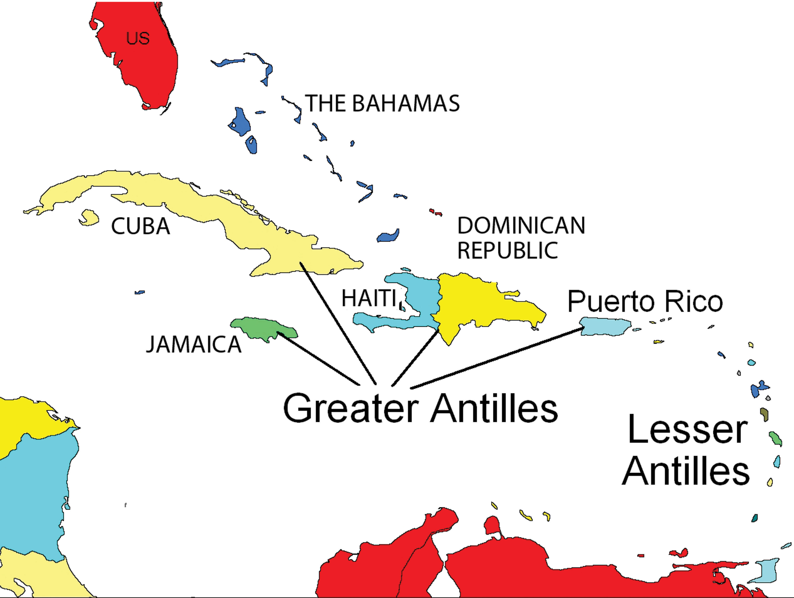Many of the Caribbean islands experience the rain shadow effect. Jamaica has as much as a twenty-inch difference in rainfall between the north side and south side of the island because most of the rain falls on the north side, where the prevailing winds hit the island. The Blue Mountains in the eastern part of the island provide a rain shadow effect. Puerto Rico has a tropical rain forest on the northeastern part of the island, which receives a large amount of rainfall. The rain shadow effect creates semidesert conditions on the southwestern side of Puerto Rico because the southwestern side receives little rainfall. Low elevation islands such as the Bahamas do not receive as much rain because they are not high enough to affect the precipitation patterns of rain clouds.
The Spanish were not the only Europeans to take advantage of colonial expansion in the Caribbean: the English, French, Dutch, and other Europeans followed. Most of the European colonial countries were located on the west coast of Europe, which had a seafaring heritage. This included smaller countries such as Denmark, Sweden, and Belgium. The Caribbean Basin became an active region for European ships to enter and vie for possession of each island.
Many of the Caribbean islands changed hands several times before finally being secured as established colonies (see Table 5.1 "Historical Caribbean Colonizers"). The cultural traits of each of the European colonizers were injected into the fabric of the islands they colonized; thus, the languages, religions, and economic activities of the colonized islands reflected those of the European colonizers rather than those of the native people who had inhabited the islands originally. The four main colonial powers in the Caribbean were the Spanish, English, Dutch, and French. Other countries that held possession of various islands at different times were Portugal, Sweden, and Denmark. The United States became a colonial power when they gained Cuba and Puerto Rico as a result of the Spanish-American War. The US Virgin Islands were purchased from Denmark in 1918. Sweden controlled the island of St. Barthelemy from 1784 to 1878 before trading it back to the French, who had been the original colonizer. Portugal originally colonized Barbados before abandoning it to the British.
Table 5.1 Historical Caribbean Colonizers
| Colonizer | European colonies |
|---|---|
| Spain | Cuba, Dominican Republic, Puerto Rico |
| British | Bahamas, Jamaica, Cayman Islands, Turks and Caicos Islands, Antigua, Dominica, St. Lucia, St. Vincent, Grenada, Barbados, Virgin Islands, Trinidad and Tobago, Montserrat, Anguilla, St. Kitts and Nevis |
| Dutch | Curacao, Bonaire, Aruba, St. Eustatius, Saba and Sint Maarten (south half) |
| French | Haiti, Guadeloupe, Martinique, St. Martin (north half), St. Barthelemy |
| United States | Puerto Rico, Virgin Islands, Cuba |
Colonialism drastically altered the ethnic makeup of the Caribbean; Amerindians were virtually eliminated after the arrival of Africans, Europeans, and Asians. The current social hierarchy of the Caribbean can be illustrated by the pyramid-shaped graphic that was used to illustrate social hierarchy in Mexico (Figure 5.10 "Socioeconomic Classes in Mexico and Most of Latin America"). Those of European descent are at the top of the pyramid and control a higher percentage of the wealth and power even though they are a minority of the population. In the Caribbean, the middle class includes mulattosA person with both European and African ancestry., or people with both African and European heritage, many of which include managers, businesspeople, and professionals. In some countries, such as Haiti, the minority mulatto segment of the population makes up the power base and holds political and economic advantage over the rest of the country while the working poor at the bottom of the pyramid make up most of the population. In the Caribbean, the lower economic class contains the highest percentage of people of African heritage.
Not only was colonialism the vehicle that brought many Africans to the Caribbean through the slave trade, but it brought many people from Asia to the Caribbean as well. Once slavery became illegal, the colonial powers brought indentured laborers to the Caribbean from their Asian colonies. Cuba was the destination for over one hundred thousand Chinese workers, so Havana can claim the first Chinatown in the Western Hemisphere. Laborers from the British colonies of India and other parts of South Asia arrived by ship in various British colonies in the Caribbean. At the present time, about 40 percent of the population of Trinidad can claim South Asian heritage and a large number follow the Hindu faith.
The largest island in the Greater Antilles is Cuba, which was transformed by the power of colonialism, the transition to plantation agriculture, and a socialist revolution. The island country of Cuba is slightly larger than the US state of Kentucky, but it has more than eleven million people, while Kentucky has just over 4.2 million. The elongated island has the Sierra Maestra mountains on its eastern end, the Escambray Mountains in the center, and the Western Karst region in the west, near Viñales. Low hills and fertile valleys cover more than half the island. The pristine waters of the Caribbean that surround the island make for some of the most attractive tourism locations in the Caribbean region.
It has been estimated that as many as one hundred thousand Amerindians inhabited Cuba when Christopher Columbus first landed on the island in 1492. Except for brief control by the British, the island was a Spanish colony until 1898. Plantation agriculture was established, and slaves provided the labor. History indicates that more than eight hundred thousand African slaves were brought to Cuba between 1800 and 1870. Slave labor was in high demand on the extensive sugar plantations that dominated the island’s economy. The African influence can still be witnessed today in the main religion of the island, Santeria, which is an overlay of African-based spirits on top of Catholic saints. At the present time, an estimated 70 percent of Cubans practice some aspect of Santeria.
With the defeat of Spain in the Spanish-American War, the United States gained possession of the Spanish possessions of Cuba, Puerto Rico, Guam, the Philippines, and various other islands and thus became a colonial power. Cuba technically became independent in 1902 but remained under US influence for decades. Sugar plantations and the sugar industry came to be owned and operated by US interests, and wealthy Americans bought up large haciendas (large estates), farmland, and family estates, as well as industrial and business operations. Organized crime syndicates operated many of the nightclubs and casinos in Havana. As long as government leaders supported US interests, things went well with business as usual.
Figure 5.27 US “Colonial” Influence in Cuba

The old capitol building in Havana, a replica of the US Capitol, was built by the United States during their control of Cuba. The building is a tourist area and no longer used for the government. The old US cars in the photo were made before the Cuban Revolution (1958) but are still used and make up about half the motor vehicles in Havana.
Source: Photo by R. Berglee.
In January of 1934, with the encouragement of the US government, Fulgencio Batista led a coup that took control of the Cuban government. Fidel Castro, once a prisoner under Batista and having fled to Mexico in exile for a number of years, returned to Cuba to start a revolution. Joining him were his brother Raúl Castro and revolutionaries such as Che Guevara, an Argentinean doctor turned comrade-in-arms. Starting in the remote and rugged Sierra Maestras in the east, Castro rallied the support of the Cuban people. By the end of 1958, the Cuban Revolution brought down the US-backed Batista government. Castro gained power and had the support of most of the Cuban population.
Figure 5.28 Fidel Castro (left); Billboard in Havana Promoting the Virtues of Revolutionaries Antonio Maceo and Che Guevara (right)
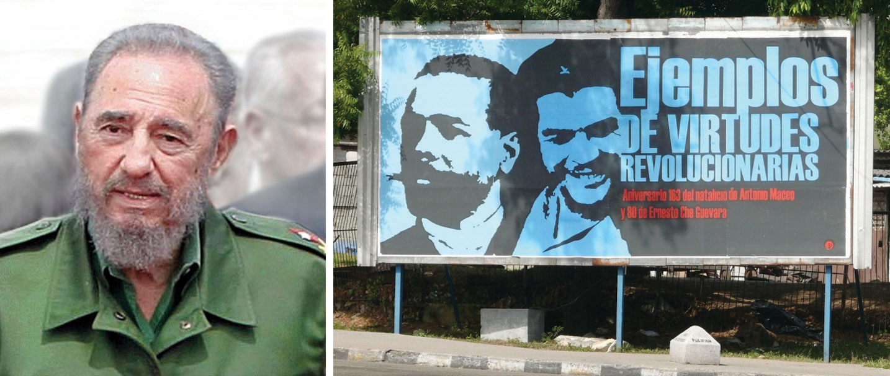Sources: Photo on the left courtesy of Agência Brasil and Lucas, http://la.wikipedia.org/wiki/Fasciculus:Fidel_Castro.jpg. Photo on the right by R. Berglee.
Castro worked to recover Cuba for Cubans. The government cleared rampant gambling from the island, forcing organized crime operations to shut down or move back to the United States. Castro nationalized all foreign landholdings and the sugar plantations, as well as all the utilities, port facilities, and other industries. Foreign ownership of land and businesses in Cuba was forbidden. Large estates, once owned by rich US families, were taken over and recovered for Cuban purposes.
Castro’s policy of seizing (nationalizing) businesses and property raised concerns in the United States. As a result, US president Dwight D. Eisenhower severed diplomatic relations with Cuba in 1960 and issued an executive order implementing a partial trade embargoRestriction on economic trade with a country. to prohibit the importation of Cuban goods. Later presidents implemented a full-scale embargo, restricting travel and trade with Cuba. In March 1960, the Central Intelligence Agency trained Cuban exiles for an invasion of Cuba at the Bay of Pigs, on the south side of the island. This failed invasion attempt only resulted in consolidating the Cuban people’s support for Castro and his socialist government.
To deter any further US plans of invading or destabilizing Cuba, Castro sought economic and military assistance from the Soviet Union. Soviet premier Nikita Khrushchev agreed to secretly send missiles armed with nuclear weapons capable of hitting targets within the United States. In September 1962, US spy planes identified the missile sites. On October 22, 1962, President John F. Kennedy announced a naval blockade of the island and informed Khrushchev that any Soviet ship crossing the blockade would be sunk. At the last second, the two leaders resolved this dispute (called the Cuban Missile Crisis) before it erupted into a potential nuclear war. Khrushchev recalled the ships and agreed to dismantle the Cuban missile sites. In return, the United States agreed not to invade Cuba and to remove US missiles from sites in Turkey that were aimed at the Soviet Union.
The collapse of the Soviet Union in 1991 caused a downturn in Cuba’s economy. With the loss of Soviet aid, the 1990s were a harsh time for Cubans, a period of transition. Castro turned to tourism and foreign investment to shore up his failing economy. Tensions between the United States and Cuba did not improve. In 1996, the United States strengthened the trade embargo with the Helms-Burton Act. At the turn of the twenty-first century, Cuba emerged as the lone Communist state in the Americas. Castro was the longest-governing leader of any country in the world. He never kept his promises of holding free elections; instead, he cracked down on dissent and suppressed free speech. He turned over power to his brother Raúl in 2006.
With Fidel Castro no longer in power, Cuba’s future looks more positive but difficult. The island has natural resources, a great climate, and an excellent location but is also struggling economically. Cuba has a high literacy rate and has standardized health care, though medical supplies are often in short supply. The Cubans who live in dire poverty look to the future for relief. Personal freedoms have been marginal, and reforms are slowly taking place in the post-Fidel era. As the largest island in the Caribbean, Cuba has the potential to become an economic power for the region. There is vast US interest in regaining US dominance of the Cuban economy, and corporate colonialists would like to exploit Cuba’s economic potential. Keeping corporate colonialism out is what Fidel’s socialist experiment worked so hard to achieve, even at the expense of depriving the Cuban people of civil rights and economic reforms.
Cuba today is in transition from a socialist to a more capitalist economy and relies on outside sources for energy and food. In 2008, the average wage in Cuba was about twenty dollars per month. There was almost total employment, and everyone was on an equal footing in regard to free health care, education, and housing. At the same time, the underground informal economy was thriving and was pushing the formal economy to make changes. That same year, Raúl Castro declared that workers with different skills and occupations could earn wages at varying levels. Cubans are now allowed to have cell phones and computers, though Internet access has been restricted by the Cuban government. More goods and money are being brought in from Cuban family members who live in the United States. The US government grants general licenses to allow a number of categories of people to travel to Cuba. It is only a matter of time before full travel restrictions are lifted.
Figure 5.29 Dump Truck Taxi
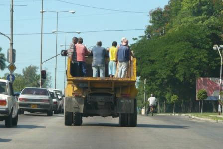Cubans use all available resources and opportunities to get by. These people are catching a ride on a dump truck to get where they want to go.
Source: Photo by R. Berglee.
Cuba is counting on tourism for an added economic boost. With some of the finest beaches and the clearest waters in the Caribbean, Cuba is a magnet for tourists and water sports enthusiasts. Its countryside is full of wonders and scenic areas. The beautiful Viñales Valley in western Cuba has been listed as a UNESCO World Heritage Site for its outstanding karst landscape and traditional agriculture as well as for its architecture, crafts, and music. Karst topography is made up of soluble rock, such as limestone, which in the Viñales Valley results in unusual bread loaf–shaped hills that create a scenic landscape attractive for tourism. This region is also one of Cuba’s best tobacco-growing areas and has great potential for economic development. Cuba is gearing up for an increase in tourism when travel restrictions are lifted by the United States. There is already a focus on improving tourism services to people traveling there from China, Australia, Japan, and other countries. Millions more from the United States are expected to travel to Cuba once the travel restrictions are lifted. The Cuban economy is banking on tourism to forge a path to a more prosperous future.
Figure 5.30 Viñales Valley in Western Cuba
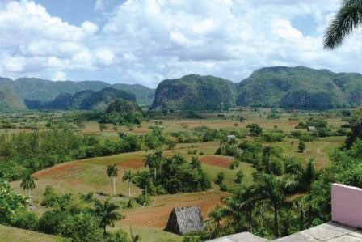In 2008, Hurricanes Gustav and Ike devastated the tobacco crops, but the region is recovering and is a major tourist area.
Source: Photo by R. Berglee.
Populated for centuries by Amerindian peoples, the island of Puerto Rico was claimed by the Spanish Crown in 1493, following Columbus’s second voyage to the Americas. In 1898, after four hundred years of colonial rule, during which the indigenous population was nearly exterminated and African slave labor was introduced, Puerto Rico was ceded to the United States as a result of the Spanish-American War. Puerto Ricans were granted US citizenship in 1917. Popularly elected governors have served since 1948. In 1952, a constitution was enacted providing for internal self-government. In elections held in 1967, 1993, and 1998, Puerto Rican voters chose to retain the commonwealth status, although they were almost evenly split between total independence and becoming a US state.
Puerto Rico is the smallest of the four islands of the Greater Antilles and is only slightly larger than the US state of Delaware. Puerto Rico’s population is about four million, similar to the population of Kentucky or Oregon. As US citizens, Puerto Ricans have no travel or employment restrictions anywhere in the United States, and about one million Puerto Ricans live in New York City alone. The commonwealth arrangement allows Puerto Ricans to be US citizens without paying federal income taxes, but they cannot vote in US presidential elections. The Puerto Rican Federal Relations Act governs the island and awards it considerable autonomy.
Figure 5.31 US Government Building in San Juan, Puerto Rico, with Both US and Puerto Rican Flags
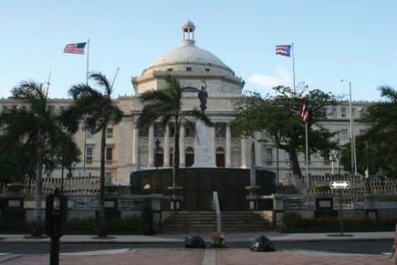Source: Photo courtesy of Bobby Lemasters.
Puerto Rico has one of the most dynamic economies in the Caribbean Basin; still, about 60 percent of its population lives below the poverty line. A diverse industrial sector has far surpassed agriculture as the primary area of economic activity. Encouraged by duty-free access to the United States and by tax incentives, US firms have invested heavily in Puerto Rico since the 1950s, even though US minimum wage laws apply. Sugar production has lost out to dairy production and other livestock products as the main source of income in the agricultural sector. Tourism has traditionally been an important source of income, with estimated arrivals of more than five million tourists a year. San Juan is the number one port for cruise ships in the Caribbean outside Miami. The US government also subsidizes Puerto Rico’s economy with financial aid.
The future of Puerto Rico as a political unit remains unclear. Some in Puerto Rico want total independence, and others would like to become the fifty-first US state; the commonwealth status is a compromise. Puerto Rico is not an independent country as a result of colonialism. Many of the islands and colonies in the Caribbean Basin have experienced dynamics similar to Puerto Rico in that they are still under the political jurisdiction of a country that colonized it.
Sharing the island of Hispaniola are the two countries of Haiti and the Dominican Republic. The island became a possession of Spain under European colonialism after it was visited by Columbus in 1492 and 1493. The Tiano-Arawak people were nonviolent and welcomed the Europeans, who in turn pressed them into servitude and slavery. French buccaneers settled on the western portion of Hispaniola and started growing tobacco and agricultural crops. France and Spain finally agreed to divide the island into two colonies: the western side would be French, and the eastern side would be Spanish.
The Dominican Republic holds the largest share of Hispaniola. A former Spanish colony, the Dominican Republic has weathered the storms of history to become a relatively stable democratic country. It is not, of course, without its problems. The Dominican Republic has long been viewed primarily as an exporter of sugar, coffee, and tobacco, but in recent years the service sector has overtaken agriculture as the economy’s largest employer. The mountainous interior and the coastal beaches are attractive to the tourism market, and tourism remains the main source of economic income. The economy is highly dependent on the United States, which is the destination for nearly 60 percent of its exports. Remittances from workers in the United States sent back to their families on the island contribute much to the economy. The country suffers from marked income inequality; the poorest half of the population receives less than one-fifth of the gross domestic product (GDP), while the richest 10 percent enjoys nearly 40 percent of GDP. High unemployment and underemployment remains an important long-term challenge. The Central American-Dominican Republic Free Trade Agreement (CAFTA-DR) came into play in March 2007, boosting investment and exports and reducing losses to the Asian garment industry. In addition, the global economic downturn has not helped the Dominican Republic.
Plantation agriculture thrived in Haiti during the colonial era, producing sugar, coffee, and other cash crops. The local labor pool was insufficient to expand plantation operations, so French colonists brought in thousands of African slaves to work the plantations, and people of African descent soon outnumbered Europeans. Haiti became one of the most profitable French colonies in the world with some of the highest sugar production of the time. A slave revolt that began in 1792 finally defeated the French forces, and Haiti became an independent country in 1804. It was the first country ever to be ruled by former slaves. However, the transition to a fully functional free state was difficult. Racked by corruption and political conflicts, few presidents in the first hundred years ever served a full term in office.
The United States occupied Haiti from 1915 to 1934 in an attempt to instill a US presence and bring some sense of stability. From 1957 to 1986, Dr. François “Papa Doc” Duvalier and then his son Jean-Claude “Baby Doc” Duvalier controlled the government. They created a private army and terrorist death squads known as Tonton Macoutes. Many Haitians fled to the United States or Canada, especially to French-speaking Quebec. After the Duvalier era, a Catholic priest by the name of Jean-Bertrand Aristide won the presidency through democratic elections only to be deposed of by a military coup a few years later. Haiti has had a difficult time finding political and economic stability.
Haiti is the poorest nation in the Western Hemisphere, and many Haitians live in dire poverty with few employment opportunities. An elite upper-class minority controls the bulk of the nation’s wealth. Many people in Haiti have sought comfort in Voodou (Vodoo), a religious practice steeped in African beliefs brought over with the slave trade. Often misunderstood by outsiders, Vodou’s its main objective is to bring good health and well-being.
Haiti’s January 12, 2010, earthquake was a major setback for such a poor country that was already in need of aid and support. The 7.0 magnitude earthquake, with many aftershocks, struck Haiti about fifteen miles from Port-Au-Prince, resulting in as many as two hundred thousand deaths. More than two million were immediately homeless, and about a million more were in need of aid. The lack of building standards in Haiti contributed to the collapse of structures and the devastation. Food and other aid were brought in by many international agencies and other countries to address the situation. Efforts continue to address the needs of the Haitian people to stabilize the situation and provide support and future opportunities.
Figure 5.32
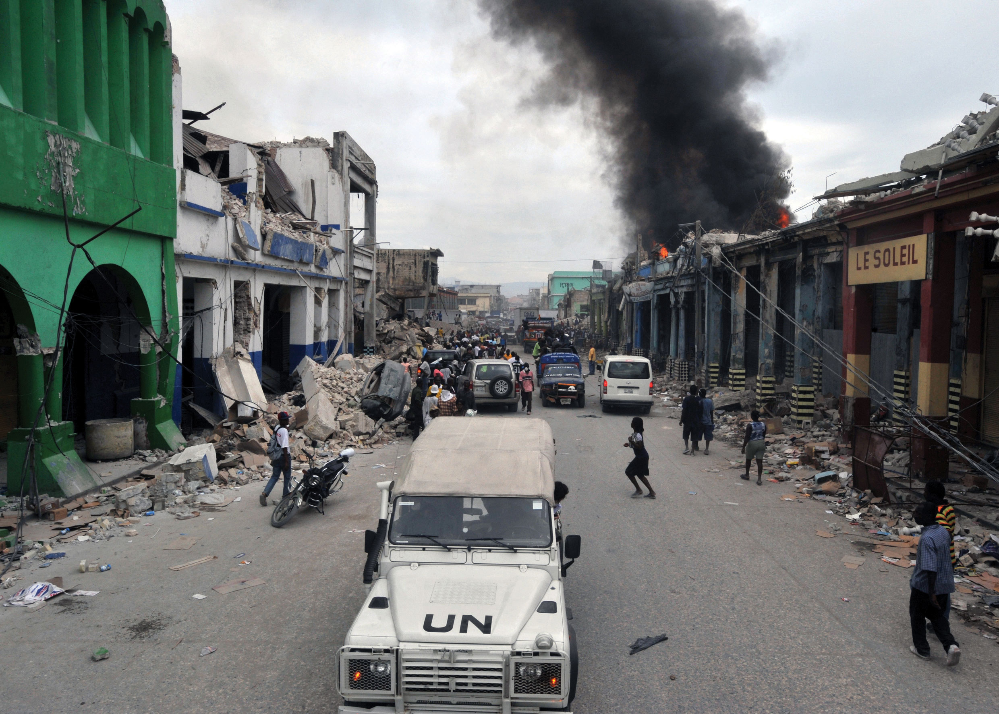UN peacekeeping troops patrol the streets of Port au Prince after Haiti’s 2010 earthquake.
Source: Photo courtesy of Agência Brasil and Diliff, http://commons.wikimedia.org/wiki/File:EscombrosBelAir5_Edit1.jpg.
The tropical island of Jamaica is physically smaller than the US state of Connecticut. In 2010, it had a population of about 2.8 million. Jamaica was settled by the Spanish early in the sixteenth century. The Taino Indians, who had inhabited Jamaica for centuries, were gradually eradicated and replaced by African slaves. When England seized the island from Spain in 1655, it established a plantation economy based on sugar, cocoa, and coffee. Two hundred years later (1834), the abolition of slavery freed a quarter million slaves, many of whom became small farmers. Jamaica gradually obtained independence from Britain, with full independence achieved in 1962. Sugar, cocoa, and coffee production continue on the island, of which more than half is mountainous. The Blue Mountains of eastern Jamaica are known for their Blue Mountain coffee production.
Deteriorating economic conditions during the 1970s led to recurrent violence as rival gangs affiliated with the major political parties evolved into powerful organized crime networks involved in international drug smuggling and money laundering. Violent crime, drug trafficking, and poverty pose significant challenges to the country. Nonetheless, many rural and resort compounds remain relatively safe and contribute substantially to the tourism sector. The beautiful beaches and lush interior make for an attractive destination for cruise ships and other tourists.
The physical geography of the Caribbean region makes it a prime location for tourism. Its beautiful coastal waters and warm tropical climate draw in tourists from all over North America and the world. Tourism is the number one means of economic income for many places in the Caribbean Basin, and the tourist industry has experienced enormous growth in the last few decades. Tourism is a major component of efforts by leaders of the islands of the Lesser Antilles to achieve economic development for their people. In the last decade, there has been strong growth in the number of cruise ships operating in the Caribbean. Cruise ships from the southern coasts of the United States ply their trade around the islands and coastal regions. San Juan receives the largest number of cruise ship travelers, but other areas well known to tourists include the Bahamas, St. Martin, and the Virgin Islands. Even the poorest country in the Caribbean, Haiti, has tried to attract cruise ships to its ports. The western Caribbean itinerary includes the Cayman Islands, Jamaica, and Mexico or Central American ports. The main restriction on cruise ship travel is the hurricane season, from June to November.
Figure 5.33 Carnival Victory Cruise Ship in San Juan Harbor
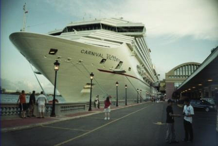Large cruise ships in the Caribbean can hold up to four thousand passengers and crew members. The major cruise lines do not operate in the Caribbean during hurricane season.
Source: Photo by R. Berglee.
One might reasonably think that the economic benefits of tourism would be entirely positive. However, this is not necessarily the case. Even though tourism has become a vital economic component of the Caribbean Basin, in the long term, tourism creates many problems. Large cruise ships and pleasure crafts can overtax the environment; there have been occasions where there were actually more tourists than citizens on an island. An increase in tourist activity brings with it an increase in environmental pollution.
Most people in the Caribbean Basin live below the poverty line, and the investment in tourism infrastructure, such as exclusive hotels and five-star resorts, takes away resources that could be allocated to schools, roads, medical clinics, and housing. However, without the income from tourism, there would be no money for infrastructure. Tourism attracts people who can afford to travel. Most of the jobs in the hotels, ports, and restaurants where wealthy tourists visit employ people from poorer communities at low wages. The disparity between the rich tourist and the poor worker creates strong centrifugal cultural dynamics. The gap between the level of affluence and the level of poverty is wide in the Caribbean. In the model of how countries gain wealth, tourism is a mixed-profit situation. Local businesses in the Caribbean do gain income from tourists who spend their money there; however, the big money is in the cruise ship lines and the resort hotels, which are mainly owned by international corporations or the local wealthy elite.
There is little activity in the Caribbean Basin in the manufacturing sector. Although US firms have invested in Puerto Rico and the Dominican Republic has experienced growth in light industries and information technologies, the remaining islands have had little industrial growth. Unless an island state has natural resources such as oil or minerals, as is the case with Trinidad and Tobago, there are few opportunities other than tourism to bolster the economy.
Agricultural products have been traditionally a large part of the economic activity of the islands of the Lesser Antilles. Grenada, for example, is known for its nutmeg and other spices. Bananas, sugar, and other fruit and food crops have also been export products. The problem has been that the profit margins on the products are low and prices are subject to international markets, which fluctuate widely. With an increasing population and few opportunities or advantages, countries such as Haiti suffer from poverty and unemployment. Being an island, there are few methods of expanding the economy. People often try to migrate to another county in search of employment and a more hopeful future.
Other methods of gaining wealth in the Caribbean include offshore banking and financial services. Various islands have established themselves as banking centers where one can set up financial accounts that are outside the jurisdiction of other countries. These offshore accounts provide tax havens for individuals or corporations that wish to evade taxes in their home countries. Many of these island banking centers do not share account information with tax agencies or government offices of other countries. Places such as the Cayman Islands have a worldwide reputation for professional financial services for offshore banking. As a result, the people of the Cayman Islands have a high standard of living with much national wealth. The Bahamas and the Turks and Caicos have also established offshore financial centers, and other Caribbean Islands are working to increase their visibility with similar services. All are hoping to gain income from this low-impact and high-income enterprise. The United States and other countries have made attempts to pressure these islands to share the financial account information of people evading taxes. If successful, there may be less of an incentive for individuals and businesses to use offshore accounts to shelter income from taxes or for those involved in illegal money-laundering schemes to hide money in the Caribbean.
The wide level of diversity in the Caribbean has not made it easy for outside entities to provide support and assistance for common economic goals. The Caribbean Community (CARICOM) is an organization with fifteen Caribbean members established to promote economic integration and cooperation in the region. It hopes to coordinate foreign policy for the region and ensure that the benefits of integration are equitably shared. CARICOM is an attempt to compete with other trade organizations such as the North American Free Trade Agreement (NAFTA) and CAFTA-DR.
The Caribbean culture includes many varieties of music that have developed on several islands. The region is a breeding ground for innovative music and rhythms that emulate the cultural traditions and attitudes of the people. Every island has its own traditional festivals that include parades, music, and dance. The music scene reveals the uniqueness of the Caribbean. Listening to the myriad of sounds generated from the different islands opens a window to the assortment of cultural backgrounds found in the Caribbean.
The Caribbean is full of local musical variations, and many types of music are found only on a single island or two. For example, the Dominican Republic has meringue music, Dominica has bouyon, and Haiti has its festive rara music.
The Cuban influence on music is vividly evident in the spicy salsa tunes that have emanated from the Caribbean over the years. African and Spanish cultural influences have helped shape the salsa music that has evolved from Cuba and neighboring islands of Puerto Rico and the Greater Antilles. With a strong percussion component, snappy brass additions, and rhythmic guitar sections, salsa has become popular throughout many parts of Latin America. Other genres of music coming out of Cuba include rumba, habanera, son, and timba, to name a few.
Calypso music comes from a mix of African influences on the island of Trinidad. Calypso began taking shape at the beginning of the twentieth century and gained popularity through Carnival and other Caribbean festivals. It has evolved to incorporate the steel pan and other musical instruments. A commercial version of calypso became popular with Harry Belafonte’s version of the Jamaican folk tune of “Day-O,” known as the “Banana Boat Song”; however, Belafonte’s 1956 album Calypso had more of a Jamaican mento musical style and he was not from Trinidad. Mento is a more folksy rural style of acoustical music that influenced other forms of music such as reggae in Jamaica.
The pan (steel pan) is the national instrument of Trinidad and Tobago, where it was created. The pan was originally made from fifty-five-gallon oil drums. The bottom is cut off at various levels to provide different sounds. The top is then shaped into a chromatically pitched percussion instrument. It is struck with a pair of straight sticks. An entire family of pans has been developed and can be assembled into a steel pan orchestra. The instrument has become popular outside the Caribbean as well.
Reggae music started coming out of Jamaica in the 1960s with the music of such artists as Bob Marley and the Wailers, which featured Peter Tosh and Bunny Wailer. The rhythmic style with offbeat accents evolved from earlier genres to become a standard of Jamaican music. Musicians from the Beatles to Eric Clapton have used reggae rhythms. Outside Jamaica, reggae has hit the charts thanks to groups such as UB40. Reggae music has often been associated with the Rastafarian movement or Rasta, which is based on a religious ideology including the beliefs that former Ethiopian emperor Haile Selassie was God incarnate and the biblical Zion was in Africa.
Identify the following key places on a map:
Above the oceans just north and south of the equator, a weather phenomenon called a tropical cyclone can develop that can drastically alter the physical and cultural landscape if it reaches land. In the North Atlantic Ocean and the Caribbean Sea, this weather pattern is called a hurricaneTropical cyclone that occurs in the North Atlantic Ocean and the Caribbean Sea.. In the North Pacific Ocean, the same type of weather pattern is called a typhoonTropical cyclone that occurs in the North Pacific Ocean.. In the Indian Ocean region and in the South Pacific Ocean, it is called a tropical cyclone or just a cycloneTropical cyclone that occurs in the Indian Ocean region and in the South Pacific Ocean.. All these storms are considered tropical because they almost always develop between the Tropics of Cancer and Capricorn.
Figure 5.35 Cyclones, Hurricanes, and Typhoons and Their Respective Locations around the World

Hurricanes develop over water that is warmer than 80 ºF. As the air heats, it rises rapidly, drawing incoming air to replace the rising air and creating strong wind currents and storm conditions. The rapidly rising humid air then cools and condenses, resulting in heavy rains and a downdraft of cooler air. The rotation of the earth causes the storm to rotate in a cyclonic pattern. North of the equator, tropical storms rotate in a counterclockwise direction. South of the equator, tropical storms rotate in a clockwise direction.
Hurricanes start out as tropical depressions: storms with wind speeds between twenty-five and thirty-eight miles per hour. Cyclonic motion and warm temperatures feed the system. If a storm reaches sustained winds of thirty-nine to seventy-three miles per hour, it is upgraded to a tropical storm. Tropical depressions are numbered; tropical storms are named. When winds reach a sustained speed of seventy-four miles per hour, a storm is classified as a hurricane.
Hot air rises. A water temperature of at least 80 ºF can sustain rising air in the development of a tropical depression. These storms continue to be driven by the release of the latent heat of condensation, which occurs when moist air is carried upward and its water vapor condenses. This heat is distributed within the storm to energize it. As the system gains strength, a full-scale hurricane can develop. Rising warm air creates a low-pressure area that draws in air from the surface. This action pushes water toward the center, creating what is called a storm surgeWhen water is pushed toward the hurricane’s center, it causes flooding when hitting landfall; usually the feature of a hurricane that produces the most damage or loss of life.. Storm surges can average five to twenty feet or more depending on the category of the hurricane. Cyclonic rotation is created by rotation of the earth in a process called the Coriolis effect. The Coriolis effect is less prominent along the equator, so tropical cyclones usually do not develop within five degrees north or south of the equator.
When a hurricane makes landfall (comes ashore), the storm surge causes extensive flooding. More people are killed by flooding because of the storm surge than by any other hurricane effect. At the center of the cyclonic system is the hurricane’s eye, where there is a downdraft of sinking air but the wind is calm and there are no clouds. The eye can extend from one to one hundred miles or more. Many people who have been in the eye of the hurricane believe the storm has passed, but in reality they are in the center of it.
Bordering the eye of a storm is the eye wall, where the strongest winds and heaviest rainfall are found. This is the most violent part of the hurricane. Beyond the eye wall are feeder bands, with thunderstorms and rain showers that spiral inward toward the eye wall. Feeder bands can extend out for many miles and increase as the heat engine feeds the storm. Hurricanes lose their energy when they move over land because of the lack of heat generation. Once on land, the storm system breaks down. Rainfall and winds can continue, but with decreased intensity.
Figure 5.36 Dynamics of Hurricane Components
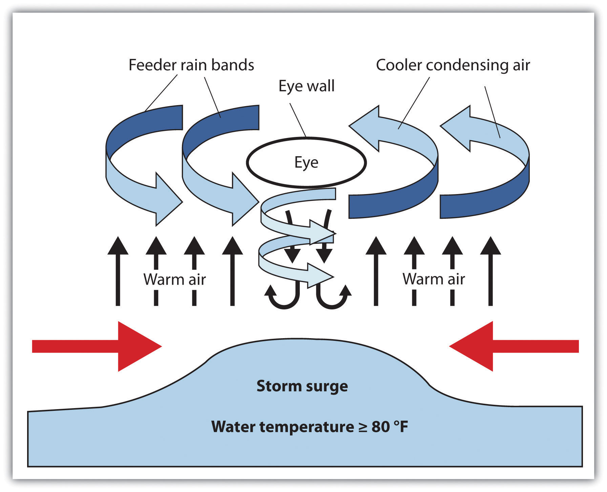Centuries ago, the Spanish used the term hurakan, an indigenous word for “evil spirits” or “devil wind,” to name the storms that sank their ships in the Caribbean. Hurricanes are rated according to sustained wind speed using the Saffir-Simpson Scale. This scale rates a hurricane according to five categories (see Figure 5.37 "Saffir-Simpson Hurricane Scale"). Category 1 hurricanes have sustained wind speeds of at least seventy-four miles per hour and can inflict heavy damage to buildings, roofs, windows, and the environment. Category 5 hurricanes have sustained winds of more than 155 miles per hour and destroy everything in their paths. Hurricanes can also spawn tornadoes, which increase their potential for destruction.
Figure 5.37 Saffir-Simpson Hurricane Scale
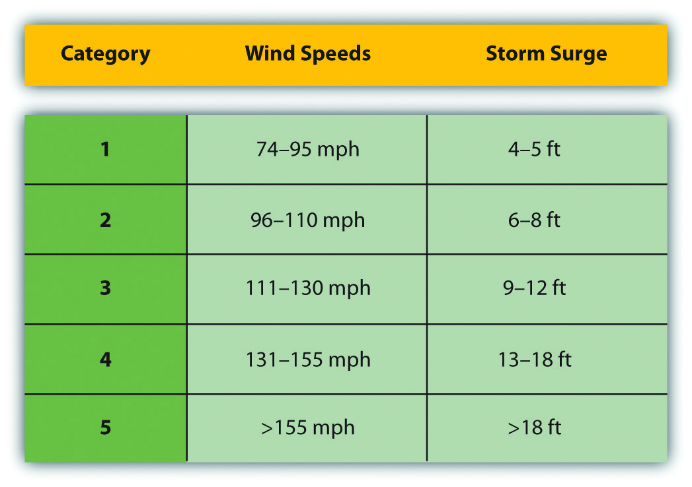Annually, more than one hundred tropical disturbances develop in the North Atlantic, but only about ten make it to a tropical storm status and five to six become hurricanes. Only two or three hit the United States in a typical year. Hurricane season for the North Atlantic lasts from June 1 to November 30. Tropical cyclones develop during the warmest season of the year when the water temperature is the highest. Though these weather patterns can bring enormous devastation to the landscape, they also redistribute moisture in the form of rain and help regulate global temperatures.
The devastating nature of tropical cyclones is the main concern when forecasting a potential storm. In 1970, the Bholo cyclone hit the coast of Bangladesh, resulting in the death of between three hundred thousand and one million people. A number of cyclones that killed more than one hundred thousand people each have hit Bangladesh in the past century. Typhoon Tip in the Northwest Pacific in 1979 is the largest tropical cyclone on record, with wind speeds of more than 190 miles per hour and a total diameter of more than 1,350 miles—equal to the distance from the Mexican border to the Canadian border in the United States. Typhoons can be, on average, twice the size of hurricanes.
Figure 5.38 Hurricane Katrina at Various Stages of Its Development across the Gulf of Mexico
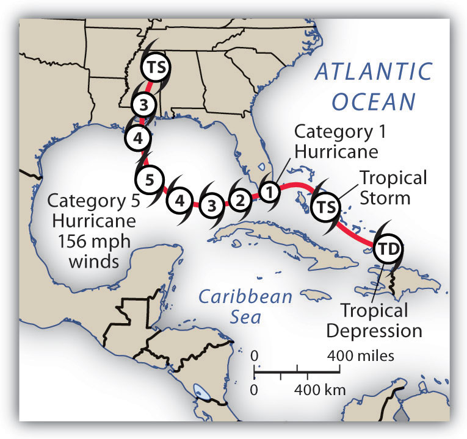Hurricane Camille was the strongest US hurricane on record at landfall, with sustained winds of 190 miles per hour and wind gusts of up to 210 miles per hour. Camille hit the US Mississippi coast in 1969 as a category 5 hurricane. It devastated everything in its path, killing 259 people. Hurricane Katrina in 2005 was one of the most costly storms to impact the United States. Katrina started out as a tropical depression while in the Bahamas. The storm reached a category 5 hurricane as it passed through the Gulf of Mexico but diminished in strength when making landfall in Louisiana, with sustained winds of 125 miles per hour (a strong category 3 hurricane). Katrina caused widespread devastation along the central Gulf Coast and devastated the city of New Orleans. At least 1,836 people lost their lives, and the cleanup cost an estimated $100 billion.
Since records were started in 1851 for hurricanes in the Atlantic Basin, there have been thirty-two hurricanes that reached category 5 in the region. A few of them have reached all the way to the Central American coast. Hurricane Mitch hit the coast of Central America in 1998 and dumped over seventy-five inches of rain across the countries of Honduras, El Salvador, Nicaragua, and Guatemala. Devastating winds and heavy rain caused the deaths of up to twenty thousand people. Destructive category 5 hurricanes Edith and Felix made landfall in Nicaragua in 1971 and 2007, respectively. The Yucatán Peninsula and the coast of Mexico have also witnessed a number of devastating category 5 hurricanes.
The Caribbean Basin is located in the path of many hurricanes developing out of the Cape Verde region of the North Atlantic. For example, 2008 was a particularly devastating hurricane season, with sixteen tropical storms and eight full-scale hurricanes, five of which caused massive devastation. Three category 4 hurricanes (Ike, Gustav, and Paloma) cut through the northern Caribbean to hit the Greater Antilles. The most devastating was Ike, which ripped through the Caribbean, across the entire length of Cuba, and then on to the Gulf Coast of Louisiana and Texas. Ike’s immense size contributed to the fact that it was the third most costly hurricane on record. Ike caused an estimated $7.3 billion in damage to Cuba and more than $29 billion in damage in the United States. Hurricane Gustav made landfall in Hispaniola and Jamaica before increasing in strength and causing about $3.1 billion in damage to Cuba. In November of 2008, Hurricane Paloma made landfall in Cuba and caused an additional $300 million in damage to the island. Many of the other Caribbean islands were also devastated by the hurricanes that hit the region in 2008.
Figure 5.39 Direct Path of Hurricane Activity

This photo indicates hurricane Gustav and tropical storm Hanna, as well as an existing tropical depression (which became Hurricane Ike) and a tropical disturbance. Tropical Storm Hanna later developed into a full-scale hurricane.
Source: Map courtesy of National Hurricane Center, http://www.nhc.noaa.gov.